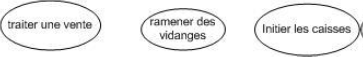

Chapitre 1 : Introduction à la modélisation orientée Objet :
1. Le génie logiciel :
1.1. Les TIC (Technologies de l'Information et de la Communication) :
L'un des phénomènes les plus marquants de ces 50 dernières années est certainement l'informatisation. Les voitures possèdent des ordinateurs de bord, la domotique envahit nos maisons, nous partageons nos expériences sur les réseaux sociaux, nous échangeons des mails, nous achetons en ligne nos vêtements, nos vacances, nos places de concert, ...
La grande majorité des entreprises possèdent des systèmes informatiques pour gérer leurs stocks, gérer la comptabilité, ...
Bref, que ce soit à la maison ou au travail ou encore à l'école, l'informatique est omniprésente à notre époque. Les technologies de l'information et de la communication sont devenues partie intégrante de notre vie. Nous sommes tous et toutes devenus des utilisateurs directs et indirects des TIC. Nous avons tous le "tic des TIC".
Les systèmes informatiques se composent de matériels et de logiciels. Actuellement, le côté matériel est relativement fiable et le marché est standardisé. Les logiciels constituent la source des problèmes de l'informatique.
1.2. Les logiciels :
Un logiciel ou une application est un ensemble de programmes, qui permet à un ordinateur ou à un système informatique d'assurer une tâche ou une fonction en particulier (exemple : logiciel de comptabilité, logicile de gestion des prêts).
Les logiciels, suivant leur taille, peuvent être développés par une personne seule, une petite équipe, ou un ensemble d'équipes coordonnées. Le développement de grands logicils par de grandes équipes pose d'importants problèmes de conception et de coordination. Or, le développement d'un logiciel est une phase absolument cruciale qui monopolise l'essentiel du coût et conditionne sa réussite et sa pérennité.
En 1995, une étude du Standish Group dressait un tableau accablant de la conduite des projets informatiques. Reposant sur un échantillon représentatif de 365 entreprises, totalisant 8380 applications, cette étude établissait que :
-
16,2% seulement des projets étaient conformes aux prévisions initiales,
-
52,7% avaient subi des dépassements en coût et délai d'un facteur 2 à 3 avec diminution du nombre des fonctions offertes,
-
31,1% ont été purement abandonnés durant leur développement.
Pour les grandes entreprises (qui lancent proportionnellement davantage de gros projets), le taux de succès est de 9% seulement, 37% des projers sont arrêtés en cours de réalisation, 50% aboutissent hors délai et hors budget.
L'examen des causes de succès et d'échec est instructif : la plupart des &checs proviennent non de l'informatique, mais de la maîtrise d'ouvrage, en comprenant sous ce terme à la fois les dirigeants et les concepteurs des métiers.
Pour ces raisons, le développement de logiciels dans un contexte professionnel suit souvent des règles encadrant la conception et permettant le travail en groupe et la maintenance du code. Ainsi, une nouvelle discipline est née : le génie logiciel.
1.3. Le génie logiciel :
Le génie logiciel est un domaine de recherche qui a été défini du 7 au 11 octobre 1968, à Garmisch-Partenkirchen, sous le parrainage de l'OTAN. Il a pour objectif de répondre à un problème qui s'énonçait en deux constations : d'une part, le logiciel n'était pas fiable, d'autre part, il était incroyablement difficile de réaliser dans des délais prévus des logiciels satisfaisant leur cahier des charges.
L'appellation génie logiciel concerne l'ingénierie appliquée au logiciel informatique. Cette branche de l'informatique s'intéresse plus particulièrement à la manière dont le code source d'un logiciel est spécifié puis produit. Le génie logiciel touche au cycle de vie des logiciels. Toutes les phases de la création d'un logiciel informatique y sont enseignées : l'analyse du besoin, l'élaboration des spécifications, la conceptualisation du mécanisme interne au logiciel ainsi que les techniques de programmation, le développement, la phase de test et finalement la maintenance.
L'objectif premier du génie logiciel était d'optimiser le coût de développement du logiciel. La crise de l'industrie du logiciel, à la fin des années 70, a montré l'importance d'élaborer une approche méthodologique.
Cette crise est caractérisée par ces quelques constats :
-
l'augmentation des coûts;
-
les difficultés de maintenance et d'évolution;
-
la non-fiabilité;
-
le non-respect des spécifications;
-
le non-respect des délais.
Voici quelques exemples qui montrent l'ampleur de l'impact des défaillances dues au manque de méthodologie de développement :
-
La sonde Mariner vers Vénus s'est perdue dans l'espace à cause d'une erreur de programme FORTAN;
-
En 1981, le premier lancement de la navette spatiale a été retardé de deux jours à cause d'un problème logiciel. La navette a d'ailleurs été lancée sans que l'on ait localisé exactement le problème (mais les symptômes étaient bien délimités)
-
L'explosion d'Ariane 5, le 4 juin 1996, qui a coûté un demi-milliard de dollars, est due à une faute logicielle d'une composante dont le fonctionnement n'était pas indispensable durant le vol.
1.4. La qualité d'un logiciel :
Ces expériences malheureuses ont conduit de nombreux chercheurs à travailler sur la définition de la qualité du logiciel en termes de facteurs, ceux-ci dépendent, entre autres, du domaine de l'application et des outils utilisés.
Citons les facteurs de la norme ISO 9126 :
-
Capacité fonctionnelle (validité) : aptitude d'un produit logiciel à remplir exactement ses fonctions, définies par le cahier des charges et les spécifications.
-
Fiabilité (ou robustesse) : aptitude d'un produit logiciel à fonctionner dans des conditions anormales.
-
Facilité d'utilisation : facilité d'apprentissage, d'utilisation, de préparation des données, d'interprétation des erreurs et de rattrapage en cas d'erreur d'utilisation.
-
Efficacité : utilisations optimales des ressources matériellles.
-
Maintenabilité (extensibilité) : facilité avec laquelle un logiciel se prête à sa maintenance, c'est-à-dire à une modification ou à une extension des fonctions qui lui sont demandées.
-
Portabilité : facilité avec laquelle un logiciel peut être transféré sous différents environnements matériels et logiciels.
Ces facteurs sont parfois contradictoires, le choix des compromis doit s'effectuer en fonction du contexte. Il existe encore de nombreux autres facteurs de qualité mais il est peu utile de tous les énumérer.
2. La modélisation orientée Objet :
2.1. La modélisation :
Souvent les formations abordent d'abord la programmation ensuite la modélisation. La programmation est l'outil qui permet de réaliser ce qui a été conçu; la modélisation fait partie du processus de conception.
Concrètement, un modèle est une représentation abstraite et simplifiée, c'est-à-dire qui exclut certains détails, d'une entité (phénomène, processus, système, etc.) du monde réel en vue de le décrire, de l'expliquer ou de le prévoir. "Modèle" est synonyme de théorie, mais avec une connotation pratique : un modèle, c'est une théorie orientée vers l'action qu'elle doit servir.
Concrètement, un modèle permet de réduire la complexité d'un phénomène en éliminant les détailss qui n'influencent pas son comportement de manière significative. Il reflète ce que le concepteur croit important pour la compréhension et la prédiction du phénomène modélisé. Les limites du phénomène modélisé dépendent des objectifs du modèle.
Pourquoi modéliser ?
Modéliser un système avant sa réalisation permet de mieux comprendre le fonctionnement du système. C'est également un bon moyen de maîtriser sa complexité et d'assurer sa cohérence. Un modèle est un langages commun, précis, qui est connu par tous les membres de l'équipe (les hommes du métier et les informaticiens). Il constitue donc, à ce titre, un vecteur privilégié pour communiquer. Cette communication est essentielle pour aboutir à une compréhension commune des différentes parties prenantes (notamment entre la maîtrise d'ouvrage et maîtrise d'oeuvre informatique) et précise d'un problème donné.
Effectivement, imaginez quelques instants : on requiert vos services pour la mise en place d'un nouveau système informatique. Dira-t-on "Bonjour, j'aurai besoin d'une classe CompteEnBanque abstraite qui sera spécialisée par deux classes CompteEpargne et CompteCourant..." ou "Bonjour, je désire un programme pour gérer mes comptes." ? La réponse est évidente : ce n'est pas en termes informatiques que s'expriment les demandes informatiques mais en bien en langage courant.
En d'autres termes, le client/l'employé énonce son problème tel qu'il le perçoit et non en termes informatiques. C'est le job de l'informaticien de comprendre, d'interpréter, d'analyser les besoins et de concevoir une application y répondant au mieux. Le dessin suivant illustre ces propos.
Soulignons aussi que pour comprendre un problème dans sa globalité, l'informaticien doit tenir compte aussi de la provenance des informations dont il doispose. Par exemple, si on désire créer un système de gestion comptable, les besoins seront exprimés différemment selon la personne source : le directeur, l'employé, les secrétaires, ...
Un problème, tel qu'énoncé par quelqu'un est donc exprimé en langage courant. Que ce soit du français , de l'anglais ou du japonais, il repose sur une langue parlée, dont la structure grammaticale de la langue française et l'orthographe sont terriblement complexes. De plus, pour énoncer un problème en langage courant, on dispose de nombreuses possibilités d'expressions. Il existe de nombreux synonymes et manières différentes d'exprimer la même chose.
Lorsqu'on désire concevoir un programme, en Java par exemple, il s'agit en fait de traduire un énoncé exprimé dans un langage possédant une syntaxe et une sémantique extrêmement riches dans un langage très pauvre.
Effectivement, un langage informatique est codifié et possède une sémantique unique :
-
Le langage est codifié car la syntaxe du Java (ou Python, C, ...) est assez pauvre : le nombre de mot appartenant au langage est limité.
-
De plus, en général, une sémantique unique. Par exemple, if (a + b > 10) a un sens unique : si la somme de a et b est strictement supérieure à 10.
Outre les aspects purement syntaxiques, un langage réel est évolutif et ambigu.
-
Évolutif car des nouveaux mots apparaissent (et disparaissent) : par exemple, mp3. Certains mots changent d'orthographe : oignon peut maintenant s'écrire onion.
-
Un langage réel est ambigu car certains mots changent de signification selon le contexte dans lesquels ils sont utilisés : la souris de l'ordinateur et la souris mangée par le chat. Sans compter le sens unique vu un peu plus haut et le sens unique d'une rue.
Ce problème d'interprétation de ce qui est exprimé en langage réel vers un langage informatique, relève de ce que l'on appelle la modélisation.
En résumé, la modélisation consiste en une représentation abstraite d'un problème. Le mot modélisation renferme le mot modèle.
-
Représentation car il s'agit de représenter dans un langage (en l'occurence un code informatique) un problème énoncé dans un autre langage (parlé).
-
Abstraite car ce ne sont pas les données individuellles observées d'un problème qui sont importantes mais la structure, les relations, les formats des données, ...
Par exemple, si dans un problème quelconque on parle de quelques personnes en disant que l'une a les yeux bleus et les cheveux noirs et l'autre les yeux verts et les cheveux roux, on retient qu'une personne est décrite par la couleur de ses yeux et de ses cheveux. En d'autres termes, la représentation abstraite, le modèle, d'une personne tient en la description de la couleur de ses cheveux et de ses yeux.
L'oienté Objet :
L'orienté Objet est une approche de la conception de programmes qui tend à structurer les différentes parties d'un programme en objets ayant des responsabilités bien définies et interagissant entre eux pour les honorer.
Il est important de mettre en évidence la délégation des responsabilités entre objets. Lorsqu'on appelle une méthode d'un objet, cet objet a la responsabilité du "bon déroulement" de l'opération jusqu'à terminaison de l'opération. Évidemment, il se peut que l'appel de méthode débouche sur un autre appel de méthode d'un autre objet et ainsi de suite. Les objets se partahent donc les responsabilités du programme : chacun remplissant (implémentant) son contrat (notamment son interface).
L'oienté Objet peut se résumer en 5 grands concepts :
-
Abstraction (adaptation du programme à la logique intrinsèque du problème en créant les nouveaux types d'objets nécessaires)
-
Modularisation (séparation des entités : décomposition en classes et packages)
-
Encapsulation (regroupement et protection des données)
-
Réutilisation (agrégation/composition)
-
Polymorphisme (des objets, héritage)
La modélisation orientée Objet :
Dans le monde orienté Objet, la modélisation informatique d'un objet du monde réel est une caractérisation de ce dernier à l'aide de 3 (ensembles d') information(s) :
-
Le nom de l'objet;
-
Un ensemble d'attributs de cet objet qui compose l'étatde l'objet;
-
Un ensemble d'actions/méthodes qui modifient les attributs précités qui définissent le comportement de l'objet.
En somme, un objet = identité + état + comportement.
Le processus de modélisation orienté objet est basé sur ce principe simple : il consiste à exprimer tous les éléments du domaine d'application à l'aide du type de définition - également appelée spécification - évoqué plus haut, soit à en donner le nom, les attributs (que l'on appelle également l'état de l'objet) et les actions possibles.
Mais, pour modéliser un problème, il est impératif d'en définir auparavant le domaine d'application.
Le domaine d'application permet de restreindre le monde réel à la partie couverte par le logiciel à développer (en supposant que l'on souhaite réaliser une modélisation à cette fin, et non par pur plaisir intellectuel). Il s'agit de délimiter ce qui appartient au système à développer et ce qui en est exclu.
Prenons un exemple :
Pour modéliser le nain de jardin ci-contre, si on s'en tient à la définition, il faut exprimer les éléments du domaine d'application à l'aide du nom, des attributs et des actions du nain à modéliser.
Si nous considérons le nain contre, nous pourrions apprendre que son nom est Portkoi, qu'il est vêtu d'un manteau bleu, d'une ceinture brune et porte un pantalon marron, qu'il a dans sa main droite un marteau et qu'il se trouve debout. Les actions susceptibles de modifier son état sont entre autres "marcher", "s'asseoir", "changer de couleur", etc.
On remarque qu'une première difficulté survient : le monde réel est infiniment complexe, et même lorsque celui-ci se limite à un seul objet, le nain Portkoi. Nous pourrions lui trouver un nombre incalculable d'attributs (chapeau, barbe, poids, hauteur, ...) et d'actions.
C'est ici que la notion de domaine d'application prend tout son sens. Rappelons que le domaine d'application permet de restreindre le monde réel à la partie couverte par le logiciel à développer.
Dans quel cadre sommes-nous donc en train de modéliser ce nain de jardin ?
Supposons que notre programme relève de la demande d'un collectionneur de nains de jardin.La modélisation du nain Portkoi pourrait se résumer à son surnom, un détail des couleurs de ses habits, des coordonnées de son emplacemnt dans son jardin ainsi qu'une description de l'objet en main pour ce qui est des attributs. Les actions seront en rapport avec cette restriction du monde réel : changer d'emplacement, se casser, repeindre, pivoter, ...
Par contre si le FLNJ (Front de Libération des Nains de Jardin) désire un logiciel concernant ses grandes évasions, le nain de jardin se caractériserait avant tout par sa date de libération, ses anciens tortionnaires ainsi que son nouveau lieu de vie.
Même si ces deux modélisations concernent le même objet du monde réel (Portkoi), dans des domaines d'application différents (le collectionneur et le FLNJ), on constate des divergences sur les modèles élaborés.
Chapitre 2 : UML :
1. Le contexte et la définition :
Les méthodes utilisées dans les années 1980 pour organiser la programmation impérative (notamment Merise) étaient fondées sur la modélisation séparée des données et des traitements. Lorsque la programmation orientée Objet prend de l'importance au début des années 1990, la nécessité d'une méthode qui lui soit adaptée devient évidente. Plus de cinquante méthodes apparaissent entre 1990 et 1995 (Booch, Classe-Relation, Fusion, HOOD, OMT, OOA, OOD, OOM, OOSE, etc.) mais aucune ne parvient à s'imposer.
En 1994, le consensus se fait autour de trois méthodes :
-
OMT de James Rumbaugh (General Electric) fournit une représentation graphique des aspects statique, dynamique et fonctionnel d'un système
-
OOD de Grady Booch, définie pour le Department of Defense, introduit le concept de paquetage (package
-
OOSE d'Ivar Jacobson (Ericsson) fonde l'analyse sur la description des besoins des utilisateurs (cas d'utilisation, ou use cases).
Chaque méthode avait ses avantages et ses partisans. Le nombre de méthodes en compétition s'était réduit, mais le risque d'un éclatement subsistait : la profession pouvait se diviser entre ces trois méthodes, créant autant de continents intellectuels qui auraient du mal à communiquer.
Évènement considérable et presque miracleux, les trois gourous qui régaient chacun sur l'une des trois méthodes se mirent d'accird pour définir une notation communee qui fédérerait leurs apports respectifs (on les surnomme depuis "the Amigos"). UML (Unified Modeling Language) est né de cet effort de convergence. L'adjectif unified est là pour marquer qu'UML unifie, et donc remplace.
L'UML (Unified Modeling Language), dont la norme complète se trouve sur le site https://www.uml.org/, est un langage conçu pour l'écriture de plans d'élaboration de logiciels (il ne s'agit pas d'une méthode). UML est un langage de modélisation, indépendant du processus et servant à décrire des modèles d'un système basé sur des concepts orientés Objet. Effectivement, UML véhicule en particulier les concepts des approches par objets (classe, instance, classification, etc.) mais intègre également d'autres aspects (associations, fonctionnalités, évènements, états, séquences, etc.).
L'unification a progressé par étapes. En 1995, Booch et Rumbaugh (et quelques autres) se sont mis d'accord pour construire une méthode unifiée, Unified Method 0.8; en 1996, Jacobson les a rejoints pour produire UML 0.9 (notez le remplacement du mot méthode par le mot langage, plus modeste). Les acteurs les plus importants dans le monde du logiciel s'associent alors à l'éffort (IBM, Microsoft, Oracle, DEC, HP, Rational, Unisys etc.) et UML 1.0 est soumis à l'OMG. L'OMG adopte en novembre 1997 UML 1.1 comme langage de modélisation des systèmes d'information à objets. La version d'UML en cours en UML 2.1.2 et les travaux d'amélioration se poursuivent. Vous pouvez trouver sur le site de l'OMG (https://www.uml.org/) les spécifications complètes des normes, bonne lecture !
UML est donc non seulement un outil intéressant mais une norme qui s'impose en technologie à objets et à objets et à laquelle se sont rangés tous les grands acteurs du domaine, acteurs qui ont d'ailleurs contribué à son élaboration.
En bref, l'UML est une boîte à outils de notations normalisées, surtout graphiques, qui bénéficie des qualités des approches par objets.
2. Les diagrammes vrac :
UML 2 comporte des types de diagrammes représentant autant de manières distinctes de représenter des concepts particuliers du système d'information. Nous ne les abordons pas tous. Voici un résumé de ceux abordés répartis en deux groupes :
-
Diagrammes structurels ou diagrammes statiques (UML Structure)
-
diagramme de classes (Class diagram)
-
diagramme d'objets (Object diagram)
-
diagramme de composants (Component diagram)
-
diagramme de déploiement (Deployment diagram)
-
diagramme de paquetages (Package diagram)
-
diagralle de structures composites (Composite structure diagram)
-
-
Diagrammes comportementaux ou diagrammes dynamiques (UML Behavior)
-
diagramme de cas d'utilisation (Use case diagram
-
diagramme d'activités (Activity diagram)
-
diagramme d'états-transitions (State machine diagram)
-
Diagrammes d'interactions (Interaction diagram)
-
diagramme de séquence (Sequence diagram)
-
diagramme de communication (Communication diagram)
-
-
Ces diagrammes, d'une utilité variable selon les cas, ne sont pas nécessairement tous produits à l'occassion d'une modélisation. Les plus utiles pour la maîtrise d'ouvrage sont les diagrammes d'activités, de cas d'utilisation, de classes, d'objets, de séquence et d'états-transitions. Les diagrammes de composants, de déploiement et de communication sont surtout utiles pour la maîtrise d'oeuvre à qui ils permettent de formaliser les contraintes de la réalisation et la solution technique.
Diagramme de cas d'utilisation :
Le diagramme de cas d'utilisation représente la structure des grandes fonctionnalités nécessaires aux utilisateurs du système. C'est le premier diagramme du modèle UML, celui où s'assure la relation entre l'utilisateur et les objets que le système met en oeuvre.
Diagramme de classes :
Le diagramme de classes est généralement considéré comme le plus important dans un développement orienté Objet. Il représente l'architechture conceptuelle du système : il décrit les classes que le système utilise, ainsi que leurs relations.
Diagramme d'objets :
Le diagramme d'objets permet d'éclairer un diagramme de classes en l'illustrant par des exemples. Il est, par exemple, utilisé pour vérifier l'adéquation d'un diagramme de classes à différents cas possibles.
Diagramme d'états-transitions :
Le diagramme d'états-transitions représente la façon dont évoluent (i.e. cycle de vie) les objets appartenant à une même classe. La modélisation du cycle de vie est essentielle pour représenter et mettre en forme la dynamique du système.
Diagramme d'activités :
Le diagramme d'activités n'est autre que la transcription dans UML de la représentation du processus telle qu'elle a été élaborée lors du travail qui a préparé la modélisation : il montre l'enchaînement des activités qui concourent au processus.
Diagramme de séquence et de communication :
Le diagramme de séquence représente la succession chronologique des opérations réalisées par un acteur. Il indique les objets que l'acteur va manipuler et les opérations qui font passer d'un objet à l'autre. On peut représenter les mêmes opérations par un diagramme de communication, graphe dont les noeuds sont des objets et les arcs (numérotés selon la chronologie) les échanges entre objets. En fait, diagramme de séquence et diagramme de communication sont deux vues différentes mais logiquement équivalentes (on peut construire l'une à partir de l'autre) d'une même chronologie. Ce sont des diagrammes d'interactions.
3. Les avantages et inconvénients :
Les avantages reconnus de l'UML sont :
-
UML est un standard reconnu et largement accepté.
-
UML est polyvalent; il permet de représenter beaucoup de choses à différents niveaux d'abstraction.
-
UML est un outil de communication et de documentation.
Certains reprochent à l'UML quelques aspects comme sa lourdeur de mise en place dans certains processus ainsi que son apprentissage parfois long et rigoureux.
Chapitre 3 : Les cas d'utilisation (Use Cases) :
1. Introduction :
[Jacobson 1992]
Bien souvent, la maîtrise d'ouvrage et les utilisateurs ne sont pas des informaticiens. Il leur faut donc un moyen simple d'exprimer leurs besoins. C'est précisément le rôle des diagrammes des cas d'utilisation qui permettent de recueillir, d'analyser et d'organiser les besoins, et de recenser les grandes fonctionnalités d'un système. Il s'agit donc de la première étape UML d'analyse d'un système.
Un diagramme de cas d'utilisation capture le comportement d'un système, d'un sous-système, d'une classe ou d'un composant tel qu'un utilisateur extérieur le voit. Il scinde la fonctionnalité du système en unités cohérentes, les cas d'utilisation, ayant un sens pour les acteurs.
Les diagrammes de cas d'utilisation permettent donc de définir les besoins fonctionnels d'un système. Ils fournissent une vue, indépendante de l'implémentation, des fonctionnalités offertes par un système; ils permettent aux concepetrus de se concentrer sur les besoins de l'utilisateur final, indépendamment des détails de réalisation. Les cas d'utilisation permettent d'exprimer le besoin des utilisateurs d'un système, il sont une vision orientée utilisateur de ce besoin au contraire d'un vision informatique.
Il ne faut pas négliger cette première étape pour produire un logiciel conforme aux attentes des utilisateurs. Pour élaborer les cas d'utilisation, il faut se fonder sur des entretiens avec les utilisateurs.
Les cas d'utilisation constituent un des outils les plus employés d'UML.
Dans ce chapitre, nous mettrons en évidence les concepts abordés en se référant à un exemple simple : le système informatique d'un magasin alimentaire, SysMag. Ce système doit gérer beaucoup de choses dans la réalité : les stocks, les employés, les ventes, ...
Ce système a été volontairement simplifié pour se limiter aux fonctionnalités suivante :
-
le traitement des ventes aux clients
-
la gestion du retour des vidages
-
l'initialisation des caisses
2. Les éléments des cas d'utilisation :
2.1. Les cas d'utilisation :
Les cas d'utilisation représentent des éléments fonctionnels bien identifiés dans un système, dans un composant ou même dans une classe. Chaque cas d'utilisation décrit en quelques mots la fonctionnalité correspondante. Il commence toujours par un verbe à l'infinitif.
Un cas d'utilisation est une description d'un ensemble de séquences d'actions, incluant des variantes, faisant intervenir le système (ou un sous-système) et un ou plusieurs acteurs en vue de fournir un résultat observable à l'un des acteurs.
L'ensemble de tous les cas d'utilisation définit tous les comportements d'un système assyrant aux acteurs que leurs objectids vont être réalisés. Tout comportement du système sans intérêt pour les acteurs ne doit pas être repris dans les cas d'utilisation.
Pour l'exemple SysMag :
2.2. Les acteurs :
Un acteur est un rôle joué par un utilisateur ou un autre système vis à vis du système. On évite de considérer une personne physique comme un acteur au profit de son rôle. Par exemple, on préfère un acteur "Président" plutôt que "Barack Obama". Les acteurs sont des types ou catégories d'utilisateurs. Ce sont des entités externes (personnes ou autres systèmes) qui interagissent avec le système en vue d'atteindre un objectif. Un acteur peut consulter et (ou) modifier l'état du système car il peut recevoir et (ou) émettre des messages.
Un acteur est donc une construction de l'esprit définie par l'analyste en vue de représenter un rôle joué par un utilisateur humain ou un autre système qui interagit directement avec le système étudié.
Représentations graphiques :

Les acteurs Client et Caissier sont représentés grâce à un "stick man".
Il existe différentes manières de représenter les acteurs comme montré ci-dessus. Généralement, nous employons un "stick man" pour représenter un acteur humain et un rectangle avec le template <<actor>> pour les systèmes connectés.
Dans notre exemple SysMag, quels sont les acteurs du système :
-
Le client ?
-
Le caissier ?
-
Le responsable du magasin ?
-
La carte de banque ?
-
Le système de lecture de carte ?
-
Le système de paiement ?
-
La caisse ?
-
L'écran qui affiche le total au client
Pour répondre à ces questions, il faut définir les frontières du système.
3. La définition du système :
Effectivement, avant de progresser dans la définition des acteurs et de leurs rôles vis à vis du système, il est essentiel de poser les frontières du système. Il est temps de se poser les questions suivantes : qu'est-ce qui appartient au système à développer ? Qu'est-ce qui n'en fait pas partie ?
Les frontières (limites) du système définissent la séparation entre le système et son environnement. Il est important de clairement les définir : c'est une source fréquente de conflit entre décideurs. Un décideur est un individu ou un groupe qui a un intérêt dan sle système en développement (stakeholder).
Par définition, un cas d'utilisation décrit une fonctionnalité précise et bien identifiée. Tout ce qui n'est pas réalisé dans le contexte de cette fonctionnalité est considéré comme étant en-dehors des frontières du système, et doit être représenté sous la forme d'un acteur.
Lorsqu'on détermine les frontières d'un système, l'essentiel est de veiller à rester toujours cohérent dans les choix posés. L'exerccice résolu ci après propose une solution (d'autres sont possibles à condition d'être cohérentes).
Reprenons l'exemple SysMag :
-
Le client est-il un acteur du système ? Le caissier est-il un acteur du système ? Le responsable du magasin ?
-
L'un comme l'autre ne sont en aucun cas des composantes internes du système puisqu'il ne s'agit pas de les informatiser. Il s'agit donc d'acteurs externes au système. Mais sont-ils tous en interactions avec celui-ci ? Lors d'une vente, c'est le caissier qui interagit directement avec le système et le client indirectement. Il faudra donc déterminer précisément leur rôle vis à vis de chaque cas d'utilisation.
-
-
La carte bancaire ou le système de lecture de carte font-ils partie du système ou jouent-t-ils un rôle déterminant vis-à-vis du système
-
La carte bancaire est le moyen d'interaction entre le client et le système de paiement. Elle n'appartient pas à notre système. Il y a peu d'intérêt à la modéliser comme acteur.
-
Le lecteur de carte n'est pas un acteur mais appartient au système de paiement; c'est lui qui détecte l'introduction d'une carte bancaire et permet l'interaction avec le système de paiement.
-
-
Le système de paiement est-il une partie du système ou joue-t-il un rôle déterminant vis-à-vis du système ?
-
Le système de paiement permet kes paiements par carte bancaire. Il s'agit d'un acteur déterminant pour le business.
-
-
La caisse ?
-
La caisse fait partie du système en développement. Mais si elle avait été dotée d'un système intelligent, nous aurions pu la considérer comme un acteur.
-
-
L'écran qui affiche le total au client ?
-
L'écran qui affiche le total au client est considéré comme composante interne du SysMag. Il fait partie du système.
-
Supposons, quelques instants, la modélisation d'un système de magasin avec self scanning. Le caissier reste-t-il acteur du système ?
-
Effectivement, le rôle des acteurs change dans ce cas. Le client interagit directement avec le système sans intervention du caissier.
Lorsqu'on parle des composants d'un système, on entend une description des éléments logiciels qui le composent. Il ne s'agit pas de décrire les parties matérielles qui interviennent dans celui-ci. En d'autres termes, il s'agit de ce qui est sous la responsabilité des développeurs du système.
4. Le diagramme des cas d'utilisation :
Le diagramme des cas d'utilisation permet d'illustrer les liens entre les acteurs et les différents cas d'utilisation.
4.1. Les rôles des acteurs : primaire ou secondaire :
On distingue 2 rôles d'acteur vis-à-vis d'un cas d'utilisation :
-
L'acteur primaire ou principal est un acteur qui utilise le système pour réaliser un objectif.
-
Un acteur secondaire est un acteur dont l'aide est nécessaire au système pour réaliser l'objectif d'un acteur primaire.
En d'autres termes :
-
L'acteur primaire est celui qui le cas d'utilisation produit un résultat observable
-
Les acteurs secondaires sont les autres; c'est-à-dire ceux qui sont consultés pour fournir des informations complémentaires pour réaliser l'objectif de l'acteur principal.
Un cas d'utilisation possède un seul acteur primaire, à la fois, et peut posséder plusieurs secondaires.
4.2. Graphiquement :
Une relation d'association est un chemin de communication entre un acteur et cas d'utilisation et est représenté par un trait continu.

Dans le cadre du cours, on ajoute une flèche sur le lien entre l'acteur primaire et le cas d'utilisation, de l'acteur vers le cas d'utilisation, pour signifier qu'il s'agit de l'acteur principal de ce cas d'utilisation. On peut également ajouter des flèches du cas d'utilisation vers les acteurs secondaires. La norme n'utilise pas la flèche mais un trait continu.
Dans l'exemple ci-dessus, Acteur1 est l'acteur principal du CasUtilisation2 et Acteur2 est l'acteur secondaire du CasUtilisation2 mais primaire du CasUtilisation1.
Dans le diagrammme des cas d'utilisation, on tente, dans la mesure des possibilités graphiques, de placer l'acteur principal du cas d'utilisation à gauche de celui-ci et les acteurs secondaires à droite. Ceci n'est pas toujours possible car celui qui est acteur secondaire pour un cas d'utilisation peut être acteur primaire pour un autre cas d'utilisation.
Dans le système SysMag, pour chaque cas d'utilisation, il faut encore définir quels sont les acteurs primaires et secondaires du système. Nous avons relevé 4 acteurs : le client, le caissier, le système de paiement et le responsable du magasin. Pour déterminer quels rôles jouent ces acteurs dans le système, il suffit de se poser la question suivante : "quel est l'acteur pour qui ce cas d'utilisation est un objectif, c'est-à-dire celui pour qui le cas d'utilisation produit un résultat ?". En d'autres termes, quel est le sujet qui conjugue le verbe de mon cas d'utilisation ?
Le diagramme des cas d'utilisation ci-dessus montre que nous avons 4 acteurs : le client, le caissier, le système de paiement et le responsable du magasin. Le système se limite à trois utilisations : traiter une vente, initier les caisses et ramener des vidanges. Les frontières du système sont également représentées.
Pour le cas "traiter une vente", le caissier est l'acteur principal et le client ainsi que le système de paiement sont des acteurs secondaires car ils interviennent dans ce cas d'utilisation. Effectivement, c'est le caissier qui a pour objectif de traiter une vente dans le système et pour ce faire, il sollicite le paiement par le client qui introduit sa carte dans le système. C'est le système de paiement qui permet la validation de la transaction bancaire.
Pour le cas "ramener des vidanges", le client est l'acteur primaire. Pour le cas "initier les caisses", le responsable du magasin est l'acteur primaire.
5. Les relations entre cas d'utilisation :
5.1. Les différents types de relation :
Le diagramme ci-après introduit un certain nombre de relation entre cas d'utilisation. Ces relations sont détaillées dans la suite.
Notons déjà qu'il existe trois types de relation entre les cas d'utilisation (détaillée par la suite) :
-
L'inclusion (Cas d'utilisation interne)
-
L'extension
-
La généralisation / spécialisation
5.2. Cas d'utilisation interne (inclusion) :
Quand un cas n'esr pas directement relié à un acteur, il est qualifié de cas d'utilisation interne.
UML utilise la technique des stéréotypes pour indiquer une relation d'inclusion entre cas d'utilisation : <<include>>. Les cas d'utilisation sont reliés par des flèches marquées de ce mot.
Include (= uses, notation UML 1.x) signifie qu'un cas d'utilisation utilise un autre cas d'utilisation s'il fait à ce dernier comme à une sous-fonction.
Le CasUtilisation1 inclut le CasUtilisation2 : si le comportement décrit par le CasUtilisation1 inclut le comportement du CasUtilisation2 : le CasUtilisation1 dépend du CasUtilisation2. Lorsque le CaSUtilisation1 est soliicité, le CasUtilisation2 l'est obligatoirement, comme une partie du CasUtilisation1.
Par exemple dans SysMag, le traitement d'une vente comprend l'enregistrement des articles que le client désire acheter et le traitement du paiement.
Les inclusions permettent de décomposer un cas complexe en sous-cas plus simples. Cependant, il ne faut pas abuser de ce type de décomposition : il faut éviter de réaliser du découpage fonctionnel d'un cas d'utilisation en plusieurs sous-cas d'utilisation pour ne pas faire de séquencement. Attention, les cas d'utilisation ne s'enchaînent pas !
Dans notre exemple, seul le cas "traiter le paiement" a un sens dans la mesure où il permet de faire de séquencement. Attention, les cas d'utilisation ne s'enchaînent pas !
Les inclusions pemettent essentielelement de factoriser une partie, de la description d'un cas d'utilisation qui serait commune à d'autres cas d'utilisation. Considérons l'exemple suivant :
Considérant qu'un caissier doit s'authentifier sur la caisse avant de traiter une vente, on pourrait réaliser le diagramme ci-dessus ... MAIS ... Cette inclusion induit qu'à chaque vente le caissier doit s'authentifier ! Dans la réalité un caissier s'authentifie une seule fois et réalise ensuite plusieurs ventes.
5.3. Relation d'extension :
La relation d'extension est probablement la plus utile car elle a une sémantique qui a un sens du point de vue métier au contraire des deux autres (inclusion et généralisation) qui sont plus des artificies d'informaticiens. L'extension est symbolisée par le stéréotype <<extend>>.
Extend signifie qu'un cas d'utilisation étend un autre cas d'utilisation si dans ce dernier il est possible à un moment donné (appelé point d'extension) de réaliser le premier. Le cas de base peut fonctionner tout seul, mais il peut également être complété par un autre, sous certaines conditions, et uniquement à certains points particuliers de son flot d'évènements (point d'extension).
On dit qu'un cas d'utilisation A étend un cas d'utilisation B lorsque le cas d'utilisation A peut être appelé au cours de l'exécution du cas d'utilisation B. Exécuter B peut éventuellement entraîner l'exécution de A : contrairement à l'inclusion, l'extension est optionnelle.
L'extension peut intervenir à un point précis du cas étendu. Ce point s'appelle le point d'extension.
Graphiquement, on présente ce que l'on appelle un point d'extension dans une note. Ce point d'extension peut éventuellement être infoqié directement sous l'intitulé du cas d'utilisation (comme dans l'illustration 12). Il porte alors un nom, qui figure dans un compartiment du cas étendu sous la rubrique point d'extension. Dans la not equi précise l'extension, on indique également la condition qui déclenche cette extension.
Prenons un exemple, lorsque le caissier traite la vente d'un client. Ce dernier peut à un moment donné présenter des coupons de réductions. Le diagramme ci-après montre un point d'extension "coupons" qui est déclenché si le client présente des coupons de réduction.
5.4. Généralisation - spécialisation :

Un cas A est une généralisation d'un cas B si B est un cas particulier de A.
Une généralisation de cas d'utilisation est typiquement utilisée pour exprimer un besoin fonctionnel de haut niveau pour un système, sans entrer dans les détails spécifiques. Les spécialisations d'un cas d'utilisation général introduisent des fonctionnalités.
Dans SysMag, lorsqu'on a précisé le cas d'utilisation "traiter le paiement", on sait qu'il y a 3 possibilités de paiement : en liquide, par chèques-repas et par carte bancaire. Ce sont là des spécialisations du cas "traiter le paiement".
Cette relation de généralisation/spécialisation est présente dans la plupart des diagrammes UML et se traduit par le concept d'héritage dans les langages orientés Objet.
5.5. Les relations entre acteurs :
La seule relation possible entre deux acteurs est la généralisation : un acteur A est une généralisation d'un acteur B si l'acteur A peut être substitué par l'acteur B. Dans ce cas, tous les cas d'utilisation accessibles à A le sont aussi à B, mais l'inverse n'est pas vrai. Une généralisation d'acteur est utilisée typiquement pour extraire les besoins communs à différents acteurs, afin de simplifier la modélisation.
Le symbole utilisé pour la génralisation entre acteurs est une flèche avec un trait plein dont la pointe est un triangle fermé désignant l'acteur le plus général (comme nous l'avons déjà vu pour la relation de généralisation entre cas d'utilisation).
Prenons deux exemples dans SysMag :
-
Le responsable du magasin peut endosser les responsabilités du caissier selon les termes de son contrat.
-
Le caissier peut faire ses courses dans le magasin.
Le responsable du magasin est donc une spécialisation du caissier puisqu'il a les mêmes responsabilités que celui-ci en plus de l'initialisation des caisses.
Par contre lors qu'on précise que le caissier peut faire ses courses dans le magasin, il ne s'agit pas à propremnt parler d'une nouvelle responsabilité. Lorsqu'il fait ses courses dans le magasin le caissier devient un simple client; il change de casquette !
6. Les scénarios d'un cas d'utilisation :
6.1. Définition :
Chaque acteir a un ensemble de responsabilités. Pour assumer ces responsabilités, il établit un ou plusieurs objectifs. Pour réaliser un objectif, il exécute des actions. Une action déclenche une interaction avec un autre acteur (interne ou externe), faisant appel à une responsabilité de cet autre acteur. Si celui-ci tient ses promesses, l'acteur primaire sera prêt à atteindre son but. Sinon, l'acteur primaire devra essayer de trouver une autre manière de réaliser son objectif. Il y aura donc une alternative.
Les interactions sont simples ou composées. Elles peuvent être réduites à un simple message. Elles peuvent aussi être une suite d'interactions. Une telle suite n'a ni branchement, ni alternatives et est généralement appelée scénario.
Un cas d'utilisation est, dès lors, une collection de scénarios. Un scénario est symbolisé par un chemin à travers lequel sont indiquées les responsabilités qui doivent être exécutées par les composantes du système, en réponse à un élément déclenceur donné.
6.2. Scénarios nominal et alternatifs :
Le scénario dans lequel tout se passe bien s'appelle le scénario principal ou nominal. Les autres seront des scénarios alternatifs. Les scénarios se subdivisent en sous-objectifs atteints ou ratés.
Un scénario représente une sucesssion particulière d'enchaînements, s'exécutant du début à la fin du cas d'utilisation, un enchaînement étant l'unité de description de séquences d'actions.
Un cas d'utilisation est une collection de scénarios possibles entre le système en construction et les acteurs externes, caractérisé par l'objectif que l'acteur primaire a envers les responsabilités déclarées du syststème, indiquant comme l'objectif de l'acteur primaire peut être atteint ou peut échouer.
6.3. Présentation d'un scénario :
Pour présenter le scénario principal d'un cas d'utilisation :
| Étape | Action |
|---|---|
| 1 | Indiquer les diverses étapes du scénario; depuis le déclenchement jusqu'à la fin du scénario (objectif atteint) |
| 2 | ... |
| ... | ... |
Pour améliorer la lisibilité, on peut présenter le scénario en 2 colonnes, l'une pour les actions de l'acteur principal primaire et l'autre pour les réactions du système. La présentation en deux colonnes offre beaucoup de clarté au scénario mais présente aussi des inconvénients. Tandis qu'elle permet de faire ressortir le dialogue entre le système et l'acteur primaire, lorsqu'un autre acteur intervient, utiliser une troisième colonne devient fastidieux ! De plus, en utilisant deux (ou plusieurs) colonnes, le scénario s'étale sur beaucoup plus de pages qu'une présentation avec une simple colonne.
On présente les alternatives au scénario séparement en mentionnant clairement l'étape du scénario à laquellle la condition alternative se vérifie; c'est-à-dire le numéro de l'étape suivi d'une lettre permettant de distinguer les différentes alternatives. Ensuite, les étapes du scénario alternatif sont numérotées linéairement.
| Étape | Action de branchement |
|---|---|
| 1.a | [condition causant le branchement de l'étape 1 du scénario principal vers un scénario alternatif - action ou sous cas d'utilisation] |
| 1.a.1 | Première étape du scénario alternatif |
| 1.a.2 | Seconde étape du scénario alternatif |
| ... | ... |
| 1.b | [autre condition de branchement de l'étape 1 du scénario principal] |
| ... | ... |
| 3.a | ... |
| ... | ... |
Une variation est une manière différente de réaliser une étape du scénario mais qui ne modifie en rien les étapes suivantes.
| Étape | Action |
|---|---|
| 1 | Liste des variations de l'étape 1 du scénario principal |
| 2 | ... |
| ... | ... |
6.4. Les niveaux d'interaction :
On distingue deux niveaux de détail d'interaction :
-
L'interface de dialogue : peut contenir des objectifs du genre : entrer la rue, le numéro, le code postal et la localité, voire même, choisir dans une combo box...
-
L'interface sémantique : on y préciserait simplement : entrer l'adresse.
On chosit généralement de travailler au niveau de l'interface sémantique pour faire le design des cas d'utilisation. La raison d'un tel choix est de laisser le plus de liberté possible pour pouvoir implémenter l'interaction en utilisant des technologies différentes (ex : voix, ...) et pour accepter divers formats de données (pour divers pays par exemple) lors de l'implémentation.
Si on écrivait les cas d'utilisation en termes d'interfzace utilisateur, on fixerait les exigences alors que généralement l'interface utilisateur va être sujette à de nombreux changements. Il faudrait recommencer trop souvent le design des cas d'utilisation en s'y prenant ainsi. Par ailleurs, le design de l'interface se fait plus tard, alors que les besoins ont déjà été précisés. En réalité, il est préférable que le groupe chargé de l'interface utilisateur lise les scénarios et propose différentes présentations.
6.5. Exemple :
Voici le scénario principal de "traiter vente" dans SysMag :
|
1. (première étape en-dehors du système) Le client arrive à la caisse avec ses articles. |
|
| 2. Le caissier initie la vente. | |
| 4. Le système enregistre l'article, affiche son intitulé et son prix ainsi que le total en cours. | |
| Le caissier répète les étapes 3 et 4 jusqu'à ce que tous les articles soient saisis. | |
| 5. Le système affiche le montant total des courses. | |
| 6. Le caissier communique ce montant au client et lui demande le paiement. | |
| 7. Le client règle le paiement. | |
| 8. Le système enregistre la vente et génère un ticket. | |
| 9. Le caissier donne le reçu au client. | |
Et quelques alternatives :
| * A [ à tout moment, si le système tombe en panne] |
| 1. le caissier relance le système et récup!re l'état précédent. |
| 2. Le système reconstruit l'état précédent. |
| 2.a. [le syst!me détecte une anomalie qui empêche la récupération de l'état précédent] |
| 2.a.1. Le système signale l'erreur au caissier et l'enregistre. |
| 2.a.2. Le caissier démarre une nouvelle vente (échec et branchement en 2) |
| Branchement au point 3 |
| 3.a [code article erroné] |
| 3.a.1. le système signale l'anomalie au caissier. |
| 3.a.2. le caissier traite l'erreur. |
| 3.a.2.a. Il y a un code lisible par un être humain. |
| 3.a.2.a.1. Le caissier introduit ce code. |
| 3.a.2.a.2. Le système affiche l'intitulé de l'article ainsi que son prix. |
| 3.a.2.a.2.a. [le code est invalide] Le système signale l'erreur et caissier tente une autre méthode (b ou c). |
| 3.a.2.a.2.b. Il n'y a pas de code mais il y a un prix. |
| 3.a.2.a.2.b.1. Le cassier saisit le prix manuellement (avec l'accord du responsable). |
| 3.a.2.a.2.c. Le caissier appelle un employé pour obtenir le bon code ou le prix. |
| 3.b. [plusieurs articles de même code] |
| 3.b.1. le caissier introduit la quantité. |
| 3-6.a. [le client présente des coupons de réduction] |
| 3-6.a.1. Le caissier encode les coupons. |
| 3-6.a.2. Le système enregistre les coupons. |
| ... |
Enfin, les variations :
| 3 | Le caissier encode l'article par scanning ou manuellement. |
| ... |
Ceci vaut mieux que de réaliser un scénario pour chaque variante. On évite ainsi un trop grand nombre de cas d'utilisation. De plus, placer les variations dans une section séparée permet d'éviter une fois de plus l'explosion du cas d'utilisation.
7. Le modèle de description d'un cas d'utilisation :
Pour décrire un cas d'utilisation, nous utilisons un modèle basé sur le template proposé par Alistair Cockburn (site internet d'Alistair Cockburn : : http://alistair.cockburn.us/ et plus précisément : http://alistair.cockburn.us/index.php/Basic_use_case_template).
7.1. Le modèle complet :
| Nom du cas d'utilisation | Commencer par un verbe. |
| Objectif | Une description résumée permettant de comprendre l'intention principale du cas d'utilisation. Cette partie est souvent renseignée en début de projet dans la phase de découverte des cas d'utilisation. |
| Niveau | Tâche utilisateur ou sous-fonction. |
| Acteur principal | Fait appel au système pour obtenur un service. |
| Parties prenantes et intérêts |
Qui s'intéresse à ce cas d'utilisation et que souhaite-t-il ? Il ne s'agit pas de l'acteur principal mais des intervenants. |
| Préconditions | Définissent ce qui est vrai avant le début d'un scénario. Il s'agit bien de l'état du système AVANT l'enclenchement par le trigger du scénario. Les éléments définis en préconditions sont vérifiables par le système. |
| État après réussite | Définissent ce qui est vrai lorsque le cas d'utilisation se termine avec succès. Il s'agit de l'état du système APRÈS la réussite du scénario. |
| État après échec | Définissent ce qui est vrai lorsque le cas d'utilisation ne se termine pas avec succès. Il s'agit de l'état du système APRÈS l'échec du scénario. |
| Trigger | L'évènement déclencheur souvent externe au système mais peut être aussi un évènement d'horloge (ex après 30 sec). |
On décrit ensuite :
| Scénario nominal | Scénario de succès type, sans conditions (présenté comme vu au point précédent, c'est-à-dire par étapes). On doit également présenter toutes les alternatives au scénario principal. |
| Variations et extensions | Détails des variations et extensions (généralisation). |
Quelques précisions :
-
Un cas d'utilisation de niveau tâche utilisateur est la forme courante qui décrit les scénarios servant à un acteur principal d'atteindre ses buts (correspond à un processus métier). Un cas d'utilisation de niveau sous-fonction décrit les sous étapes nécessaires pour la réalisation d'un but utilisateur.
-
Usuellement, l'état après réussite s'appelle aussi post conditions de succès/ Idem pour l'état après échec.
-
Un cas d'utilisation doit être déclenché par quelqu'un ou par quelque chose, l'argent déclencheur étant extérieur au cas d'utilisation mais détectable par le système. Cet agent déclencheur est appelé trigger. Ke trigger peut être le premier évènement du cas d'utilisation ou non; à vous de choisir et de rester cohérent ! Néanmoins, il faut éviter les triggers tels que "le client décide de faire des courses". Le trigger doit être une action pas une décision, une envie,... On préfère alors "le client arrive à la caisse avec ses articles" ou encore "le caissier initie une vente".
7.2. Exemple :
| Nom du cas d'utilisation | Traiter une vente |
| Objectif | Permettre au client de passer ç la caisse avec ses articles et de les payer; mettre à jour les stocks; enregistrer le paiement |
| Niveau | Tâche |
| Acteur principal | Caissier |
| Parties prenantes et intrêts | Client et Banksys |
| Pré-conditions | La caisse a été initiée par le responsable de magasin, le caissier est authentifié. |
| État après réussite | La vente est enregistée (ticket imprimé). Les stocks ont été modifiés. Le paiement s'est déroulé avec succès. Le client peut partir avec ses articles. |
| État après échec | Le paiement n'a pas été effectué. Le client ne part pas avec ses articles et il faut les replacer en rayon. |
| Trigger | Le client arrive à la caisse avec ses articles.Même si cet événement n'est pas à proprement parler détectable par le système, on préfère préciser que c'est bien l'arrivée d'un client qui génère l'initialisation d'une vente par le caissier. |
Remarque : il pourrait y avoir d'autres parties prenantes éventuelles (par exemple, les services fiscaux). Celles-ci sont indiquées uniquement lorsqu'elles interagissent avec le sytème développé.
7.3. Les contraintes non-fonctionnelles :
On peut intégrer des informations complémentaires à la description du cas d'utilisation
Par exemple :
| Informations diverses | Nom du Use Case |
| Priorité | À quel point ce Use Case est critique pour le système ou pour la société ? |
| Performance | La quantité de temps que peut prendre ce Use Case. |
| Fréquence | Combien de fois sera-t-il exécuté sur une période donnée ? |
| Moyens pour les acteurs | Ex : fichiers, bases de données, types d'interaction... |
| Informations utiles |
Questions ouvetes qui attendent une décision, planning,... Liens avec d'autres Use Cases (UC qui appellent celui-ci qui lui sont subordonnés) |
| Variantes des données et des technologies |
Autres méthodes d'entrées et sorties, format de données... Langage utilisé, appel à du code Open Source, licence... |
Pour le système SysMag, voici quelques contraintes non fonctionnelles que l'on pourrait ajouter :
-
Performance : le système doit réagir dans un délai inférieur à 4 secondes, peu importe l'action de l'utilisateur.
-
Résistance aux pannes : si une coupure de courant ou une autre défaillance survient au cours du cas d'utilisation, la transaction sera annulée, la vente n'aura pas eu lieu. Le système doit pouvoir redémarrer automatiquement dans un état cohérent et sans intervention humaine.
-
Résistance à la charge : le système doit pouvoir gérer plus de 4000 ventes par jour.
7.4. Validation des cas d'utilisation et conseils :
Les cas d'utilisation doivent être validés complètement. On peut le faire en répondant à quelques questions :
-
Le cas d'utilisation est-il complet ? Des détails doivent-ils être ajoutés ?
-
L'objectif de l'acteur primaire est-il correctement atteint ?
-
Des changements au niveau des exigences ou de la procédure peuvent-ils simplifier le processus décrit dans le cas d'utilisation ?
-
Y a-t-il des objectifs supplémentaires qui n'ont pas été traités ?
-
Y a-t-il des acteurs supplémentaires qui n'ont pas été représentés ?
Les recommandations essentielles présentées ci-après, sont celles de Cockburn. En voici un résumé :
-
Partir du sommet (les grandes fonctions), et se maintenir le plus possible au niveau objectif utilisateur.
-
Centrer son attention sur le cas nominal (un scénario typique de succès).
-
Préciser toujours les parties prenantes et leurs intérêts.
-
Utiliser un verbe au présent de l'indicatif à chaque étape.
-
Utiliser la voic active pour décrire les sous-objectifs en cours de satisfaction.
-
Le sujet doit être clairement localisable (en début de phrase généralement).
-
Rester concis et pertinent (éviter les longs documents).
-
Éviter les si, et placer les comportements alternatifs dans les extensions.
-
Signaler les sous-cas d'utilisation. Ils sont toujours représentés par la relation d'inclusion d'UML.
-
Identifier le bon objectif.
-
Signaler la portée.
-
Laisser de côté l'interface utilisateur.
Pour écrire les cas d'utilisation, nous proposons de procéder dans l'ordre indiqué ci-dessous :
-
Description globale du système :
-
Limites du système
-
Acteurs
-
Cas d'utilisation
-
Relations entre acteurs
-
Relations entre acteurs et cas d'utilisation
-
Relations entre cas d'utilisation.
-
-
Description textuelle des cas d'utilisation - modèle (scénarios inclus)
-
Flux alternatifs et variations
-
Vérification globale (redondance, relation, ...)
8. La dynamique des cas d'utilisation :
Les cas d'utilisation traduisent en termes fonctionnels les besoins des utilisateurs. Lorsque cette étape de définition des cas d'utilisation est achevée, on requiert souvent l'utilisation des diagrammes dynamiques d'UML (diagramme de séquence et d'activités notamment) pour détailler les scénarios.
Les diagrammes d'activités permettent de décrire un cas d'utilisation complet (scénario + alternatives + variations) ou encore un ensemble de cas d'utilisation. Les diagrammes de séquence permettent de détailler un scénario particulier (sans alternative ni variation).
Dans le cas "traiter une vente" :
Remarquez que, bien que le diagramme d'activités semble plus compréhensible, il est plus compliqué à réaliser que le diagramme de séquence.
9. Conclusion :
Il est important de noter que l'utilisation des relations n'est pas primordiale dans la rédaction des cas d'utilisation et donc dans l'expression du besoin. Ces relations peuvent être utiles dans certains cas mais une trop forte focalisation sur leur usage conduit souvent à une perte de temps ou à un usage faussé, pour une valeur ajoutée, au final, relativement faible.
Unanimement reconnus comme cartonnés à l'ingénierie des besoins, les diagrammes de cas d'utilisation ne peuvent être qualifiés de modélisation à proprement parler. D'ailleurs, de nombreux éléments descriptifs sont en langage naturel. De plus, ils ne correspondent pas stricto sensu à une approche objet. En effet, capturer les besoins, les découvrir, les réfuter, les consolider, etc., correspond plus à une analyse fonctionnelle classique.
Les cas d'utilisation sont une bonne approche pour trouver le QUOI plutôt que le COMMENT. Ils forcent à voir les cas exceptionnels aussi bien que les cas normaux.
Les cas d'utilisation peuvent aider à formuler les (cas de) tests. Effectivement les scénarios décrits fournissent les grandes lignes des jeux de tests à effectuer sur l'application. Ils constituent le référentiel des tests de validation. C'est-à-dire les tests qui permettent de vérifier que l'application répond bien aux spécifications énoncées.
Chapitre 4 : Le diagramme de classes :
1. Introduction :
Le diagramme de classes est considéré comme le plus important de la modélisation orientée objet, il est le seul obligatoire lors d'une telle modélisation.
Alors que le diagramme de cas d'utilisation montre un système du point de vue des acteurs, le diagramme de classes en montre la structure interne. Il permet de fournir une représentation abstraite des objets du système qui vont interagir ensemble pour réaliser les cas d'utilisation. Il est important de noter qu'un même objet peut très bien intervenir dans la réalisation de plusieurs cas d'utilisation.
Le diagramme de classes permet de décrire les entités du monde modélisé et les relations existant entre ces entités. Il permet de décrire l'état et le comportement des objets : il montre les attributs et les opérations de chaque classe. De plus, il indique les contraintes devant exister entre les objets.
On relève 3 manières (3 perspectives) de concevoir un diagramme de classes :
-
Conceptuelle : On y représente les concepts du domaine étudié. À ce niveau, le diagramme est indépendant du langage d'implémentation.
-
De spécification : On précise ici les interfaces pour le langage de programmation qui sera utilisé.
-
D'implémentation : On y indique comment les interfaces seront implémentés.
Attention, les diagramme de classes sont très riches, les notations y sont très nombreuses. N'utilisez dans un premier temps que les concepts principaux : classes, associations, attributs, opérations, contraintes et généralisations. N'introduisez les autres notions que quand vous en avez vraiment besoin (10% des cas).
2. Les classes :
2.1. Les notions de classes et d'objet :
Une classe est la description formelle d'un ensemble d'objets ayant une sémantique et des propriétés communes. Elle représente la description d'un ensemble d'objets possédant les mêmes caractéristiques.
Un objet est une entité aux frontières bien définies, possédeant une identité et encapsulant un état et un comportement. Un objet est une instance d'une classe.
Par exemple, la classe Personne est définie ci-dessus.
-
Son état englobe 3 attributs : le nom, le prénom et la date de naissance.
-
Son comportement se résume en 2 actions : calculer son âge et donner son nom complet.
-
L'instance qqn est représentée également sur ce diagramme. qqn est un objet de type Personne dont les valeurs de l'état sont indiquées (dubois / jean / 18061982).
En Java, le schéma ci-dessus se traduit par le code suivant :
public class Personne {
private String nom;
private String prenom;
private int dateNaissance;
public Personne(String nom, String prenom, int dateNaissance) {
this.nom = nom;
this.prenom = prenom;
this.dateNaissance = dateNaissance;
}
public int calculerAge() {
// faire le calcul
return 0;
}
public String renseignerNomComplet() {
return prenom + " " + nom;
}
public static void main(String[] args) {
Personne qqn = new Personne("dubois", "jean", 18061982);
}
}2.2. Les propriétés :
Une classe définit un jeu d'objets dotés de propriétés. Les propriétés d'un objet permettent de spécifier son état et son comportement. Précédemment, nous avons dit que les propriétés d'un objet étaient soit des attributs, soit des opérations, auxquels nous pouvons ajouter les terminaisons d'associations.
2.2.1. État d'un objet :
Ce sont les attributs et les terminaisons d'associations (voir partie sur l'association entre classes) qui décrivent l'état d'un objet. On utilise les attributs pour des valeurs de données pures, dépourvues d'identité, telles que les nombres et les chaînes de caractères. On utilise les associations pour connecter les classes du diagramme de classe. Dans ce cas, la terminaison de l'association (du côté de la classe cible) est une propriété de la classe de base.
Les propriétés décrites par les attributs prennent des valeurs lorsque la classe est instanciée.
2.2.2. Comportement d'un objet :
Les opérations décrivent les éléments individuels d'un comportement que l'on peut invoquer. Ce sont des fonctions qui peuvent prendre des valeurs en entrée et modifier les attributs ou produire des résultats. Une opération est la spécification (déclaration) d'une méthode. L'implémentation (définition) d'une méthode est également appelée méthode. Il y a donc une ambiguïté sur le terme méthode.
Les attributs, les terminaisons d'association et les méthodes constitient donc les propriétés d'une classe (et de ses instances).
2.3. Graphiquement :
Une classe est représentée par un rectangle divisé en trois à cinq compartiments :
Le premier indique le nom de la classe, le deuxième ses attributs et le troisième ses opérations. Un compartiment des responsabilités peut être ajouté pour énumérer l'ensemble de tâches devant être assurées par la classe mais pour lesquelles on ne dispose pas encore assez d'informations. Un compartiment des exceptions peut également être ajouté pour énumérer les situations exceptionnelles devant être gérées par la classe.
Le nom de la classe doit évoquer le concept décrit par la classe. Il commence par une majuscule. On peut ajouter des informations subsidiaires comme le nom de l'auteur de la modélisation, la date, etc.
La syntaxe de base de la déclaration d'un nom d'une classe est la suivante :
[ <Nom_du_paquetage_1>::...::<Nom_du_paquetage_N> ] <Nom_de_la_classe> [ { [abstract], [<auteur>], [<date>], ... } ]2.4. La classe abstraite :
Une classe peut être abstraite : dans ce cas, son nom est indiqué en italique ou en le spécifiant explicitement en utilisant la contrainte <<abstract>>. Une classe abstraite est une classe qui n'est pas destinée à être instanciée. Une classe abstraite peut contenir un eou des méthodes qui ne sont pas implémentées. Ces méthodes sont alors appelées méthodes abstraites.
Elle peut définir des constructeurs (voir plus bas) mais aucun objet n'aura comme type d'exécution celui d'une classe abstraite. De telles classes servent de canevas pour la construction de sous-classes.
Pour indiquer qu'une classe est abstraite (sur un diagramme fait à la main), on utilise la contrainte (pas facile d'écrire en italique à la main :-)).
2.5. Les interfaces :
Une interface est une classe dans laquelle aucune méthode n'est implémentée, et où les champs ne sont pas indiqués.
Une interface est représentée comme une classe excepté l'absence du mot-clef abstract (car l'interface et toutes ses méthodes sont, par définition, abstraites) et l'ajout du stéréotype <<interface>>.
En Java, on dit qu'une interface est une classe abstraite où tous les attributs sont des constantes (static final).
Une interface êut être implémentée par une ou plusieurs classes. Graphiquement, cela est représentée par un trait discontinu terminé par une flèche triangulaire.
Par exemple :
Une variante plus compacte est de représenter les interfaces à l'aide de petits cercles reliés aux classes qui les implémentent.
La notation compacte (la petite boule dans le diagramme ci-dessus) permet de monter qu'une classe implémente une interface sans détailler les méthodes de l'interface. Cela permet d'alléger le diagramme de classes.
2.6. Les attributs :
2.6.1. Notation :
Les attributs définissent des informations qu'une classe ou un objet doivent connaître. Ils représentent les données encapsulées dans les objets de cette classe. Chacune de ces informations est définie par un nom, un type de données, une visibilité et peut être initialisé. Le nom de l'attribut doit être unique dans la classe.
La syntaxe de la déclaration d'un attribut est la suivante :
[visibilité] [/] nom [:type] ['['multiplicité']'] [=valeur initiale] [{contrainte}] Exemples :
| + tailleMoy : int | Public |
| # nom : String[0..10] | Protected, tableau |
| - prénom : String | Private |
| + tailleMaximum : int = 2 | Public, static, valeur initiale |
visibilité (ordre décroissant) :
-
public (+) : toutes les classes peuvent accéder à l'attribut public.
-
protected (#) : les classes du package ainsi que ses descendants peuvent accéder à l'attribut protected.
-
Default (~ ou package) : toutes les classes du même package peuvent accéder à l'attribut package. Lorsqu'aucune visibilité n'est spécifiée, cela correspond à la visibilité par défaut.
-
private (-) : la classe uniquement peut accéder à l'attribut private.
type indique le type de l'attribut : soit un type primitif (boolean, char ou entier) ou un type de référence.
Multiplicité indique le nombre de valeurs que peut contenir l'attribut. Sans précision, elle est par défaut à 1. Lorsqu'une multiplicité supérieure à 1 est précisée, cela signifie que cette variable est capable de retenir une référence vers un plusieurs données. Par exemple : int tab [] ou encore matrice [] [].
2.6.2. Attribut dérivé :
Certains attributs ont une valeur qui peut se déduire de celles des autres attributs de la classe ou des classes en relation avec elle. Un tel attribut est appelé attribut dérivé et on le représente en faisant précéder son nom de /. Ainsi, la classe Produit peut contenir un champ prixTTC dont la valeur est calculable à l'aide de renseignements provenant des champs TVA et prixHT.
2.6.3. Attribut de classe :
Un attribut peut être de classe ou d'instance. Les variables de classe sont celles dont la valeur est toujours identique pour toutes les instances de la classe. Les variables d'instance ont une valeur qui peut différer entre plusieurs instances de la classe (leur valeur est propre à instance). Concrètement, une variable de classe associe une certaine quantité de mémoire à une classe. Une variable d'instance associe de la mémoire aux objets.
On indique un attribut de classe dans un diagramme de classes en le soulignant.
Par exemple : tailleMoyenne : int.
2.7. Les méthodes
2.7.1. Notation :
La déclaration d'une opération contient les types des paramètres et le type de la valeur de retour, sa syntaxe est la suivante :
<visibilité> <nom_méthode> ( [ <paramètre> [, <paramètre> [, <paramètre> ...] ] ] ) :[<type_retour>]-
type_retour précise le type du résultat de la méthode décrite. Exemple : somme(int, int) : int.
-
paramètres indique les types des différents paramètres de la méthode. Exemple : somme(int, int).
La syntaxe de définition d'un paramètre (<paramètre>) est la suivante :
[<direction>] <nom_paramètre>:<type> ['['<multiplicité>']'] [=<valeur_initiale>] -
direction permet d'indiquer si le paramètre est un input, un output ou les deux. C'est-à-dire in, out ou inout. En Java, étant donné que les paramètres étant in pour les types primitifs et inout pour les autres, nous ne le spécifierons pas dans le cadre du cours.
Dans une classe, une opération (même nom et mêmes types de paramètres) doit être unique. Quand le nom d'une opération apparaît plusieurs fois avec des paramètres différents, on dit que l'opération est surchargée. En revanche, il est impossible que deux opérations ne se distinguent que par leur valeur retournée.
2.7.2. Méthode de classe :
Une méthode peut être de classe ou d'instance. Les méthodes de classe ne peuvent lire ou modifier que les variables de classe. Les méthodes d'instance peuvent manipuler l'ensemble des variables de l'objet. Contrairement aux variables, les méthodes d'instance sont identiques pour plusieurs instances d'une même classe. Les méthodes de classe sont invoquées en envoyant un message soit à la classe qui les définit, soit à n'importe quelle instance de cette classe.
On indique une méthode de classe en la soulignant. Par exemple : getTailleMoyenne() : int.
2.7.3. Méthode abstraite :
On peut également signifier qu'une opération est abstraite en la plaçant en italique. Si toutefois, vous élaborez votre schéma à la main, préférez noter le mot abstract comme une contrainte de la méthode. Une méthode abstraite est une méthode ne possédant pas d'implémentation.
Lorsqu'il y a au moins une méthode abstraite dans une classe, celle-ci est donc abstraite.
2.7.4. Les types d'opérations :
On distingue différents types d'opérations :
-
Getter et setter : elles obtiennent (get) et modifient (set) respectivement la valeur d'un attribut et ne font rien d'autre.
-
Un query est une opération qui renvoie une valeur associée à l'objet, sans en changer l'état observable. Autrement dit après l'exécution d'un query les valeurs renvoyées par l'ensemble des queries seront les mêmes. Ce qui ne veut pas dire que les attributs sont tous restés inchangés ! Par exemple, la classe Commande peut contenir un champ montant_total et une opération total_commande(). La première fois que cette opération est appelée, elle calcule le total de la commande et renvoie cette valeur. Elle en profite pour stocker ce total dans le champ montant_total, afin de ne plus devoir le recalculer au prochain appel.
-
Un modificateur change l'état observable d'un objet.
-
Le constructeur est une opération particulière d'une classe qui permet l'instanciation, qui est invoquée pour créer un nouvel objet. Le constructeur initialise les attributs de l'objet construit, c'est-à-dire donne des valeurs à ses attributs. Le constructeur doit avoir :
-
Le même nom que la classe
-
Pas de type de retour
-
Être invoqué en utilisant
new
-
Dans le Chapitre 10 : UML en Java, vous trouverez un exemple en Java de ces différentes opérations.
3. Les relations entre classes :
3.1. L'association :
Une association est une relation entre deux classes (association binaire) ou plus (association n-aire), qui décrit les connexions structurelles entre leurs instances.
Une association peut donc relier deux classes mais aussi une classe à un attribut propre (association dégénérée).
Les terminaisons d'associations et les attributs sont donc deux éléments conceptuellement très proches.
On peut paramétrer les terminaisons d'associations par les éléments suivants :
3.1.1. Le nom :
Comme un attribut, une terminaison d'association (c'est-à-dire une extrémité de l'association) peut être nommée. Le nom est situé à proximité de la terminaison, mais contrairement à un attribut, ce nom est facultatif. Le nom d'une terminaison d'association est appelé nom du rôle. Une association peut donc posséder autant de noms de rôle que de terminaisons (deux pour une association binaire et n pour une association n-aire). Le nom de rôle n'est pas obligatoire; s'il n'est pas présent, il s'agit de la classe d'arrivée.
Conventionnellement, on le place sur le côté gauche de l'association en se dirigeant vers la terminaison en question.
3.1.2. La multiplicité :
Comme un attribut, une terminaison d'association peut posséder une multiplicité. Elle est mentionnée à proximité de la terminaison. Contrairement à un attribut dont la multiplicité par défaut est 1, la multiplicité par défaut d'une terminaison d'association est non spécifiée. La multiplicité indique combien d'objets participent à une relation.
On les indique en précisant la valeur inférieure et la valeur supérieure, par exemple :
-
1 .. 10
-
0 .. 1
-
...
Si les valeurs inférieure et supérieure sont identiques, on n'indique qu'un seul nombre; par exemple, 1 au lieu de 1 .. 1.
L'abbréviation * désigne une valeur quelconque; on peut utiliser * comme suit :
-
* qui signifie 0 .. infini, autrement dit 0, 1 ou plusieurs.
-
1 .. * signifie 1 ou plusieurs.
3.1.3. La visibilité :
Comme un attribut, une terminaison d'association possède une visibilité. La visibilité (private, package, public ou protected) est mentionnée à proximité de la terminaison, et plus précisément, le cas échéant, devant le nom de la terminaison.
3.1.4. La navigabilité :
Pour un attribut, la navigabilité est implicite, navigable, et toujours depuis la classe vers l'attribut. Pour une terminaison d'association, la navigabilité peut être précisée.
Une flèche indique dans quel sens se lit l'association (direction). Une flèche est appelée une navigation.
Utilisation d'une flèche de navigation :
On supprime la responsabilité pour la pizza de fournir la liste de ses commandes.
Une association sans navigation peut être interprétée dans deux sens : soit il s'agit d'une association bidirectionnelle, soit il s'agit d'une association pour laquelle on n'a pas encore précisé les navigations.
Par exemple :
Une association unidirectionelle implique qu'un seul des deux objets (celui à l'origine de la flèche) liés par la relation connaît l'autre. Par exemple, un objet de type Personne référence zéro ou plusieurs voitures. Cependant, à partir d'un objet de type Voiture, on ignore l'objet de type Personne auquel il est lié.
Une association bidirectionnelle implique une contrainte supplémentaire : les deux rôles doivent être inverses l'un de l'autre. Un objet de type Personne référence ou non un objet de type PermisConduire et un objet de type PermisConduire référence toujours un objet de type Personne. Et si un PermisConduire référence telle Personne, cette Personne doit référencer ce PermisConduire et de même dans l'autre sens.
3.2. L'association qualifiée :
Quand une classe est liée à une autre classe par une association, il est parfois préférable de restreindre la portée de l'association à quelques éléments cibles (comme un ou plusieurs attributs) de la classe. Ces éléments cibles sont appelés un qualificatif.
Un qualificatif permet donc de sélectionner un objet dans les objets reliés par l'association qualifiée à l'objet principal. L'objet sélectionné par la valeur du qualificatif est appelé objet cible.
L'association est appelée association qualifiée. Un qualificatif agit toujours sur une association dont la multiplicité est plusieurs (avant que l'association ne soit qualifiée) du côté cible.
Un objet qualifié et une valeur de qualificatif génèrent un objet cible lié unique. En considérant un objet qualifié, chaque valeur de qualificatif désigne un objet cible unique. Un qualificatif est donc un attribut d'association dont les valeurs partitionnent la liste des objets reliés par le biais d'une association. En d'autres termes, la connaissance d'un objet et d'une valeur de qualificatif permet de retrouver un objet lié à l'autre bout de l'association concernée.
Par exemple, le numéro du quai permet de retrouver le quai dans une gare.
Le fait de qualifier l'association montre l'importance du numéro dans l'association par rapport à la version avec l'agrégation. Les qualifications des associations sont traduites en programmation par les clés des tables de hachage.
Autre exemple, une instance du triplet {Echiquier, rangée, colonne} est en association avec une instance unique de la classe Case. Inversement, une instance de la classe Case est en classe Case est en association avec une instance unique du triplet {Echiquier, rangée, colonne}.
3.3. Classes - Associations :
Une classe-association possède les propriétés des associations et des classes : elle se connecte à deux ou plusieurs classes et possède également des attributs et des opérations.
Une classe-association est caractérisée par un trait discontinu entre la classe et l'association qu'elle représente.
Considérons le cas suivant : une personne est compétente dans certaines matières et une matière relève de la compétence de certaines personnes. Pour chaque compétence, on désire mentionner un niveau.
Ici, la classe-association s'impose : le niveau de compétence d'une personne est unique dans chaque matière.
On suppose qu'une personne ne travaille que pour un employeur à la fois. On voudrait préciser la période (date de début et date de fin) pendant laquelle il est employé. Pour ce faire, on rajoute une classe-association Emploi qui permet de garder cette information. Placer ce renseignement dans la classe Personne est possible mais non justifié, car il concerne l'association et non la personne elle-même.
Une autre manière de représenter cette information est de faire d'Emploi une classe.
Dans ce cas, l'association employeur est appelée une association dérivée. Cela signifie que l'association est déductible des autres associations déjà présentes dans le diagramme de classes. On l'indique en faisant précéder le nom du rôle par un /.
Quand choisir une classe-association plutôt qu'une véritable classe ?
Le fait qu'une classe-association ajoute une contrainte qui n'ajouterait pas l'emploi d'une vraie classe. Reprenons l'exemple composé des trois classes Personne, Société et Emploi. Supposons maintenant qu'on désire tenir compte des divers emplois occupés par une personne au cours de sa carrière. On placera, alors, une multiplicité * au lieu de 0..1 à l'extrémité de l'association côté Société :
Dans ce diagramme, l'emploi d'une classe-association restreint une personne à ne pouvoir travailler qu'une seule fois pour une société, ce qui est irréaliste. Il est judicieux d'utiliser ici une vraie classe; on utilisera donc une classe Emploi à part entière comme le montre le diagramme suivant :
3.4. Agrégation / composition :
L'agrégation est la relation qui relie la partie au tout. Elle représente une relation d'inclusion d'un élément dans un ensemble.
Contrairement à une association simple, l'agrégation est transitive.
L'agrégation se représente par un petit losange placé du côté de l'agrégat.
Si on modifie l'agrégat, certains constituants peuvent changer.
La composition est une forme forte d'agrégation. Les parties vivent et meurent avec le tout et font définitivement partie de lui. Une partie ne peut faire partie que d'un seul tout. Ceci implique la suppression en cascade des parties avec le tout. Si le nombre de composants est fixé, ils peuvent être représentés par des attributs.
La composition est représentée sur le diagramme par un losange noir.
3.5. Généralisation / spécialisation :
3.5.1. Les concepts :
La généralisation décrit une relation entre une classe générale (classe de base ou classe parent) et une classe spécialisée (sous-classe). La classe spécialisée est intégralement cohérente avec la classe de base, mais comporte des informations supplémentaires (attributs, opérations, associations). Un objet de la classe spécialisée peut être utilisé partout où un objet de la classe de base est autorisé.
Dans le langage UML, ainsi que dans la plupart des langages objet, cette relation de généralisation se traduit par le concept d'héritage. On parle également de relation d'héritage.
Le symbole utilisé pour la relation d'héritage ou de généralisation est une flèche avec un trait plein dont la pointe est un triangle fermé désignant le cas le plus général.
Quand des classes ont entre elles un certain nombre de différences mais beaucoup de ressemblances, ces similiarités seront placées dans une classe générale. Par exemple : un client de type société et un client de type privé donnent lieu à la classe générale Client.
3.5.2. Graphiquement :
En résumé :
-
L'option de la généralisation :
-
Factorisation d'éléments communs, permettant l'expression d'énoncés plus génériques
-
Abstraction des détails spécifiques aux classes spécialisées
-
-
L'optique de la spécialisation :
-
Ajout de caractéristiques spécifiques à cette sous-classe
-
Focalisation sur les aspects spécifiques de cette sous-classe
-
3.5.3. Complet - incomplet :
Les généralisations ci-dessus précisent si l'ensemble des enfants d'une classe est complet ou incomplet.
-
Dans le premier diagramme, un objet de type Personne ne pourra plus être spécialisé par une autre classe que celles mentionnées (Etudiant, Professeur ou Autre).
-
Par contre, dans le second, on pourra davantage spécialiser le type Sportif si nécessaire. Sans aucune mention, une généralisation est incomplète.
3.6. Classification / instanciation :
3.6.1. Les concepts :
L'instanciationd'une classe A correspond à la création d'objets de type A. Dans l'exemple qui suit, obj3 est une une instanciation du type Professeur.
La classification réfère à la relation entre un objet et son type. Un objet possède un type d'une certaine classe.
Dans la classification simple, un objet appartient à un type unique, qui peut hériter d'autres types.
Une classification doit être stable et extensible.
L'héritage permet la classification des objets. Effectiment, sur base de l'exemple du diagramme de l'héritage Animal - Chien (figure 39), une instance de Chien est également une instance d'Animal.
Le principe de substitution (Liksow, 1987) permet de déterminer si une relation d'héritage est bien employée par la classification : "Il doit être possible de substituer n'importe quelle instance d'une super-classe, par n'importe quelle instance d'une de ses sous-classes, sans que la sémantique d'un programme écrit dans les termes de la super-classe n'en soit affectés.".
3.6.2. Classification dynamique :
En classification statique, l'objet ne peut pas changer de type. Ceci est permis en classification dynamique.
Dans l'exemple ci-dessus, une personne peut changer de poste durant sa carrière : elle peut, par exemple, être vendeur et ensuite être promu manager.
Les classifications dynamiques sont utiles au niveau conceptuel. Le problème est de les implémenter de manière à respecter ce modèle en ce qui concerne l'interface/ Si, passer d'une interface dynamique à une implémentation simple et statique est trop compliqué, mieux vaut alors s'en passer.
3.6.3. Association "est un" :
Les notations de généralisation/spécialisation et de classification génèrent des associations de type "est un".
Les généralisations sont transitives tandis qu'une classification n'est pas transitive.
Exemple :
-
Une généralisation : Un Labrador est un Chien.
Dans ce cas, Labrabor est une classe spécialisant la classe Chien.
-
Autre généralisation "Un Chien est un Animal".
-
Enfin, on ajoute une classification : "Le Chien est une Espèce"
Dans ce cas, Chien est un objet de la classe Espèce.
Un Labrador est bien un Animal par (1) et (2) mais n'est pas une Espère comme l'impliquerait (1) et (3).
On évitera dès lors d'employer le terme "est un" pour nommer une association, car, comme on le voit, il est source de confusion et peut conduire à créer des sous-types respectant le principe de substitution là où il ne s'applique pas.
3.7. Dépendance :
Une classe (classe cliente de l'interface) peut dépendre d'une interface ou d'une autre classe. On représente cela par une relation de dépendance et le stéréotype <<use>>.
Ceci signifie que la classe Client utilise l'interface List. Il y a donc une dépendance de la classe Client vis-à-vis de l'interface List; un changement dans List a des répercussions dans Client qui en dépend.
4. Les contraintes supplémentaires :
Un diagramme de classes est une manière de préciser des contraintes à respecter par le système. Les multiplicités en sont une forme : ainsi on apprend qu'une Commande est faite par un seul client. Les constructions de base : associations, attributs, généralisations précisent en réalité les contraintes principales.
Il est possible dans les diagrammes UML (pas uniquement les classes) d'ajouter d'autres contraintes comme le fait qu'un attribut doive être final par exemple. Il suffit d'ajouter ces contraintes à la suite de la définition de la propriété entre {}.
Il existe aussi un langage qui formalise l'expression des contraintes : OCL (Object Constraint Language). Ce langage formel est volontairement simple d'accès et possède une grammaire élémentaire (OCL peut être interprété par des outils). Les contraintes seront mises entre accolades : {}. Il n'y a pas de syntaxe particulière pour les écrire. UML n'oblige pas l'utilisation d'OCL. On pourra donc utiliser du français courant, ou un langage semi-formel voire un fragment de code.
Par exemple, le XOR est une notation que l'on peut ajouter pour ajouter une contrainte entre associations. Un XOR est un "ou exclusif".
5. Les stéréotypes :
Il s'agit d'un mécanisme génral d'extension du langage UML.
Les stéréotypes sont indiqués entre guillemets (< >).
Certains stéréotypes sont prédéfinis, mais chacun peut en définir d'autre à sa convenance.
Ici, nous pourrions définir le stéréotype <historique> pour infiquer que nous voulons nous conformer au pattern Historic Mapping décrit dans Fowler : Analysis Pattern (Addison - Wesley, 1997).
Le diagramme de l'illustration 31 se résume alors à :
Ce modèle nous apprend qu'une personne ne peut travailler que pour un seul employeur à la fois, mais qu'au cours du temps, il peut changer de société.
6. Les classes paramétrées :
Aussi appelé generics en Java (depuis Java 1.5), ce concept est utile pour définir des collections d'objets dans un environnement fortement typé.
La notation UML est :
La classe Ensemble possède deux méthodes chacune prenant en paramètre un objet de type T (non indiqué dans le diagramme).
L'emploi d'une classe paramétrée donne lieu à ce qu'UML appelle un élément lié.
On peut également la représenter comme suit :
EnsembleDEmployés possède une implémentation de toutes les méthodes d'Ensemble pour lesquels le paramètre T est chaque fois remplacé par le paramètre Employé.
Les classes paramétrées ne sont quasi jamais utilisées dans un modèle conceptuel. Elles servent à représenter des collections qui sont, à ce niveau, indiquées par les associations.
Aux niveaux de spécification et d'implémentation, on ne les emploiera que si le langage utilisé les supporte.
7. Conclusion :
En respectant la norme, il est aisé de reconnaître les relations entre classes en observant le graphisme de celle-ci.
Dans l'exemple ci-contre, nous observons immédiatement :
-
une dépendance entre A et B
-
une association entre A1 et B1
-
une spécialisation entre A2 et B2
-
une implémentation entre A3 et B3
Aux différentes étapes de l'analyse, dessinez des diagrammes de classes appropriés sans essayer de mettre la charrue avant les boeufs.
-
Durant l'analyse, ne dessinez que des diagrammes conceptuels.
-
Quand vous commencez à travailler avec le langage choisi, dessinez des diagrammes de spécialisation, afin de définir les interfaces.
-
Si vous avez besoin de préciser telle ou telle technique d'implémentation particulière, dessinez un diagramme d'implémentation. Ne le faites pas si l'implémentation coule de source.
Ne dessinez de diagrammes que pour les points clés. Mieux vaut peu de diagrammes utilisés qu'un tas de schémas non employés.
8. CRC Cards :
L'orienté Objet semble une vision naturelle du monde mais cela reste complexe de concevoir un système orienté objets, de répartir les responsabilités dans une architecture orientée objets, ...
Les cartes CRC, Classes Responsabilités Collaborateurs, sont apparues comme un moyen aussi simple qu'efficace d'analyser les scénarios. Initialement proposé par Beck et Cunnigham comme outil pour l'enseignement de la programmation orientée Objet, elles se sont montrées d'excellents outils de développement qui facilitent les remue-méninges et améliorent la communication entre développeurs.
La méthodologie employée pour concevoir les CRC est le brainstorming qui se base sur l'analyse des scénarios pour concevoir le design de l'architecture du système.
Les principes du brainstorming :
-
Toutes les idées potentielles sont bonnes;
-
Pas de censure !
-
-
Penser rapidement et furtivement; pondérer plus tard !
-
Une discussion rapide encourage la créativité individuelle.
-
-
Donner la parole à chacun;
-
Ne laisser personne s'imposer !
-
-
Un peu d'humour est bénéfique;
-
L'humour permet de relâcher les tensions et de rendre le groupe plus cohérent et effectif.
-
Les classes sont représentées sur des fiches standard (10 cm x 15 cm) et non en diagramme. Il est interdit d'utiliser plus d'une fiche par classe.

On y indique les responsabilités de la classe au lieu d'attributs et de méthodes.
-
Une responsabilité est une description de haut niveau d'un but de la classe.
-
La liste doit être courte : trois responsabilités est une borne supérieure normale.
-
Il ne faut pas y lister de nombreuses petites responsabilités de bas niveau.
Une deuxième colonne indique les collaborateurs nécessaires pour chaque responsabilité. Ceci donne une idée, à un haut niveau, des liens entre classes.
Les cartes CRC encouragent la discussion entre développeurs et experts métier, particulièrement pour décider comment mettre en oeuvre un cas d'utilisation. En général, une équipe se compose de 5 ou 6 personnes idéalement :
-
1 ou 2 experts métier
-
1 ou 2 analystes
-
1 analyste spécialisé OO
-
1 leader (pas un boss)
Avoir une petite équipe, c'est un manque de diversité, mais, l'inverse amène des difficultés à s'accorder.
Les CRC sont particulièrement utiles pour se démarquer d'un modèle de données, vu leur côté comportemental. Les CRC peuvent être considérées comme un diagramme de classes de niveau conceptuel dans lequel les responsabilités sont définies pour chaque classe.
8.1. Les principes :
-
Le texte de chaque carte doit rester simple. En particulier, les détails non essentiels du système ne doivent pas y être données.
-
Il est permis d'effacer et de réécrire le contenu d'une carte au fur et à mesure de l'étude des scénarios.
-
On y indique les responsabilités de la classe au lieu d'attributs et de méthodes.
-
Une responsabilité = description de haut niveau d'un but de la classe.
-
-
La liste des responsabilités doit être courte.
-
Trois responsabilités est une borne supérieure normale.
-
-
Une deuxième colonne indique les collaborateurs nécessaires pour chaque responsabilité.
-
Ceci donne une idée, à un haut niveau, des liens entre classes.
-
8.2. Le déroulement :
-
Déterminer les scénarios sur lesquels on travaille :
-
Choisir un ensemble de cas d'utilisation cohérent c'est-à-dire liés aux mêmes objets.
-
Avant de commencer le jeu, chaque membre doit réaliser sa propre investigation parmi les sources d'informations :
-
Documents d'études des besoins (cas d'utilisation) → les scénarios
-
Interviews des utilisateurs
-
Rapports existants
-
Fichiers existants et bases de données existantes
-
-
Un bon analyste est un bon détective !
-
-
Lister les intervenants potentiels (classes candidates) :
-
Comment repérer les classes candidates ?
-
Par brainstorming
-
On relève tous les termes qui appartiennent à la définition du business (glossaire)
-
-
Trier les classes candidates en 3 :
-
Les classes critiques (core classes) → les gagnantes → celles qui seront sur une CRC card.
-
Les classes non pertinentes (irrelevant classes) → les perdantes → celles qui sont hors sujet/intérêt.
-
Les classes indécises (undecided classes) → les "peut-être" → qui peuvent réintégrer le système.
-
-
-
Placer les cartes sur la table :
-
La première carte placée est celle de l'acteur principal du cas d'utilisation.
-
La seconde carte placée est celle du premier intervenant dans le scénario (celui qui reçoit le premier message).
-
Conseils :
-
Ne jamais jeter des cartes, les mettre sur le côté... Un design initial très mauvais peut s'avérer être le meilleur plus tard.
-
Varier les situations : en changeant les cartes sur table, en ajoutant des nouvelles cartes, en redistribuant les rôles dans l'équipe...
-
-
-
Lire les scénarios et alternatives.
-
Lire les scénarios et alternatives.
-
En parcourant le scénario, on remplit les responsabilités des objets sur les cartes.
-
Il faut éventuellement ajouter des nouvelles cartes ou renommer des responsabilités.
-
-
Concrètement :
-
Un lecteur parcourt le scénario.
-
Les autres membres de l'équipe montrent les objets qui collaborent à la réalisation du scénario. [prise de note des responsabilités]
-
Lorsqu'un objet en utilise un autre, ce dernier est appelé "collaborateur" du premier. [prise de note des collaborateurs d'un objet]
-
-
8.3. Exemple :
Reprenons notre exemple SysMag pour lequel nous avions défini le diagramme des cas d'utilisation suivant :
Le résultat du jeu :
Ces cartes permettent la réalisation d'un premier diagramme de classes conceptuel :
8.4. Conclusion :
Les CRC ne sont qu'une notation ! Les CRC n'apportent rien de plus si on ne les conçoit pas par le biais de jeu de rôles et de brainstorming influant sur le dynamissme/l'implication de l'équipe de développement.
Effectivement, souvent pour résoudre un problème, il suffit de le poser autrement !
Chapitre 5 : Le diagramme d'objets :
1. Introduction :
Les diagramme d'objets constituent des instanciations des diagrammes de classes. Ils montrent les objets et leurs relations. On y indique l'état des objets; c'est-à-dire l'ensemble des valeurs de ses attributs. Pour rappel, un objet se compose d'un état et d'un comportement.
On les emploiera de temps en temps pour mieux comprendre un diagramme de classes, pour mettre en évidence la structure et le contexte.
Ci-dessous, on présente d'abord un diagramme de classes et ensuite un exemple de diagramme d'objets représentatnt l'état de certains objets de ce diagramme de classe.
2. Notation :
En UML, un objet est représenté par un rectangle dans lequel on fait figurer le nom de l'objet et/ou le nom de la classe. Ces noms sont toujours soulignés et en miniscule. Le nom de la classe est précédé d'un double point (:). Si le nom de l'objet est absent, on parle d'objet anonyme. Le nom indiqué peut même être suivi du nom du package précédé de deux doubles points (::).
Analysons les diverses notations ci-dessus partant de gauche vers la droite :
-
La première manière n'est utilisée que si le design de la classe n'a pas encore été fait, donc tout au début du processus d'analyse.
-
L'objet qqn est de type Personne.
-
Il y a un objet anonyme de la classe Personne.
-
Il y a un objet anonyme de la classe Personne qui se trouve dans le package Domaine.
La valeur des attributs peut être indiquée dans le rectangle représentant l'objet. On utilisera pour ce faire un deuxième compartiment comme le montre les objets de la figure ci-dessus.
3. Les liens entre objets :
Les associations entre classes s'instancient en liens reliant les objets. Si l'association de la classe A vers la classe B est multiple, l'objet de classe A sera relié à plusieurs objets de classe B.
Les liens (instances d'une association) sont donc les relations entre objets (ou instances). Rappelons que les associations permettent d'établir des relations entre classes. Un lien est bien une connexion entre des instances d'objets. Une association décrit un groupe de liens ayant un sens commun et c'est une connexion entre des classes d'objets.
On peut aussi utiliser une notation proche du diagramme de classe :
Les mêmes caractéristiques que celles des associations peuvent se retrouver sur un diagramme d'objet : agrégation, composition, rôles, navigation, qualification... Seule la multiplicité ne peut pas être utilisée, puisqu'elle donne lieu à autant de liens.
Chapitre 6 : Le diagramme de packages :
1. Introduction :
Au fur et à mesure qu'un projet se développe, se repose l'éternelle question de le subdiviser en sous-systèmes de tailles raisonnables. L'idée est de regrouper des classes en unités de haut niveau. En UML, ces unités sont appelées packages.
Le problème est de savoir comment regrouper les classes en packages. Malheureusement, il n'y a pas de solutions formelles miracles, tout au plus quelques conseils heuristiques.
2. Les dépendances :
Le concept le plus utile à ce propos est la notation de dépendance. Une dépendance existe entre deux éléments si un changement fait à l'un implique de modifier l'autre. Ce dernier est alors dit dépendant du premier. Cette notation est générale et s'applique déjà au cas des classes.
Une classe peut dépendre d'une autre pour de multiples raisons :
-
si elle envoie un message à l'autre
-
si elle possède un membre de l'autre classe
-
si une de ses opérations a pour paramètre un objet de l'autre classe ou renvoie un tel objet
-
...
La dépendance d'une classe vis à vis d'une autre classe se résume au fait que si l'autre classe change son interface, la première classe doit être modifiée.
En UML, la dépendance se note à l'aide d'une flèche pointillée.
3. Graphiquement :
Le diagramme de packages introduit une nouvelle notation :
Voici un exemple de diagramme de packages :
4. La conception des packages :
Lorsqu'on conçoit des packages, on veille à minimiser les dépendances existantes entre les classes situées dans différents packages. Il va de soi qu'il n'est pas possible de les éliminer totalement sinon on aurait affaire à deux applications et non une seule. En réalité, on essaye de faire en sorte qu'un package soit dépendant d'un minimum de packages, afin que des modifications faites dans les interfaces des classes d'un package ait des répercutions sur le moins de packages possibles.
La principale raison qui rend ceci faisable, est la constation du fait que les dépendances ne sont pas transitives; si une classe A dépend d'une classe B qui dépend de la classe C, des changements à l'interface de C provoqueront des modifications à l'implémentation de B, pas à son interface, ce qui arrête la propagation du mal.
Cette non-transitivité peut être renforcée par la visibilité gérée par le langage de programmation utilisé. Ainsi le langage Java propose une visibilité limitée au package importé et ce de manière non transitive, contrairement au mécanisme des includes en C++. De plus certaines classes du package, peuvent être marquée de manière à en limiter la visibilité aux classes de ce package et à ne pas pouvoir être importées.
On essayera d'éviter les cycles de dépendances, mais ce n'est pas toujours possible. Dans un tel cas on aura intérêt à regrouper un tel cycle à l'intérieur d'un package conteneur.
On pourra encore limiter les dépendances en réduisant l'interface du package par l'exportation d'un nombre minimal d'opérations. Ceci peut se faire en créant une ou plusieurs nouvelles classes dans le package. Ces classes regrouperont toutes les opérations qu'on pourra importer et seront les seules classes publiques (importables) du package.
De telles classes sont appelées Façades.
5. Les autres possibilités :
UML permet de montrer le contenu d'un package en dessinant une icône pour chaque classe qu'il contient, en y incluant un diagramme de classe ou un diagramme de package, s'il s'agit d'un package conteneur.
UML définit aussi des généralisations pour les packages : les packages spécifiques doivent se conformer à l'interface fourni par le package général. Ce dernier pourra être marqué {abstrait}, comme pour les classes.
De même, un package pourra être marqué {global} pour indiquer que tous les autres packages dépendnat de lui, sans avoir à dessiner toutes ces dépendances. Ceci permet d'alléger le dessin.
L'exemple ci-dessous illustre ces notations.
Chapitre 7 : Le diagramme d'activités :
1. Introduction :
Modéliser les activités d'un système consiste à décrire son exécution et à identifier les comportements successifs de celui-ci, sans s'intéresser à sa structure.
Si les diagrammes d'interactions mettent l'accent sur les objets qui échangent des messages et mènent à bonne fin des activités, les diagrammes d'activités, au contraire, insistent sur les activités se déroulant dans le temps.
Les diagrammes d'activités offrent une vue graphique aidant à la validation des exigences du client.
Ils permettent de modéliser :
-
Des processus (à tous niveaux)
-
Les comportements des cas d'utilisation
-
Les comportements des classes (méthodes, ...)
Dans la phase de conception, les diagrammes d'activités sont particulièrement adaptés à la description des cas d'utilisation. Plus précisément, ils viennent illustrer et consolider la description textuelle des cas d'utilisation.
2. Les concepts :
2.1. L'activité :
Les activités sont des comportements avec au moins une action interne et au moins une transition sortante se déclenchant lors de la complétion de l'action. Les activités n'ont ni transitions internes ni transition sortantes déclenchées par un évènement extérieur.
On les représente par un rectangle arrondi sur les côtés et droit en bas et en haut.
2.2. Le noeud initial et le noeud final :
Un noeud initial est un noeud de contrôle à partir duquel le flot débute lorsque l'activité enveloppante est invoquée. Une activité peut avoir plusieurs noeuds initiaux. Un noeud initial possède un arc sortant et pas d'arc entrant.
Graphiquement, un noeud initial est représenté par un petit cercle plein : .
Un noeud final est un noeud de contrôle possédant une ou plusieurs arcs entrants et aucun arc sortant.
Un noeud final est représenté par un petit cercle plein entouré d'un autre cercle : .
Il peut y avoir plusieurs noeuds finaux; il faut alors spécifier s'il s'agit d'un état final avec succès ou échec.
Le passage d'une activité vers une autre est matérialisé par une transition.
2.4. La condition de garde :
Une condition de garde représente une condition de transition pour passer d'une activité à l'autre.
2.5. La décision :
Les décisions sont employées quand des conditions de gardes sont utilisées pour indiquer différentes transitions possibles. Elles sont représentées par un losange avec une seule transition entrante et au moins deux transitions sortantes. Ces dernières doivent être labélisées par des conditions de gardes mutuellement exclusives.
On place une décision dans un diagramme lorsque le choix ne relève pas directement de l'activité précédente. Sinon, on peut se contenter de marquer les possibilité dans des conditions sur les transitions comme dans l'illustration qui suit.
2.6. La barre de synchronisation :
Les barres de synchronisation, représentées par une barre horizontale épaisse, indiquent que les transitions sortantes conduisent à des activités pouvant se dérouler en parallèle, et que les transitions entrantes doivent se synchroniser avant de continuer le flot d'activité. Les activités se déroulant en parallèle peuvent en réalité être exécutée dans n'importe quel ordre et même en alternance.
Les barres de synchronisations permettent de décrire des :
-
Transitions sortantes : activités pouvant débuter en parallèle. On parle de synchronisation disjonctive :
Figure 62 : le diagramme d'activités - transition sortante Les activités "uneActivité" et "uneAutreActivité" doivent être achevées avant de débuter "encoreUneAutreActivités".
Exemple :
Figure 65 : le diagramme d'activités - transitions entrantes, exemple Pour passer un examen, un étudiant doit impérativement avoir entièrement payé son minerval et être inscrit.
-
Activités parallèles : exécutées dans n'immporte quel ordre et même en alternance :
Fugure 66 : le diagramme d'activités - activités parallèles Les activités "uneAutreActivité" et "encoreUneAutreActivité" doivent débuter lorsque l'activité "uneActivité" est terminée. L'activité "encoreUneDernièreActivité" ne peut commencer que si "uneAutreActivité" et "encoreUneAutreActivité" sont terminées toutes les deux.
Les activités parallèles ne doivent pas nécessairement se dérouler en même temps. Le parallélisme signifie seuelement que l'ordre dans lequel les activités parallèles sont réalisées importe peu.
Exemple :
Figure 67 : le diagramme d'activités parallèles, exemple Lorsqu'on reçoit une reçoit une livraison, il faut à la fois effectuer un contrôle de la quantité commandée et un contrôle de la qualité des produits avant de l'enregistrer. Peu importe que le contrôle quantité soit effectué avant ou après le contrôle qualité mais il faut impérativement que ces deux contrôles soient achevés avant d'enregistrer la livraison.
2.7. L'itération :
On peut marquer l'itération d'une activité. Pour marquer la répétition, on dessine une barre de synchronisation qu'on annote avec un itérateur (pour i allant de 1 à n, tant que telle condition, ...).
L'itération se poursuit tant qu'il n'y a pas de barre de synchronisation.
Dans le diagramme ci-dessus, on doit réaliser N fois "uneActivité" avant de débuter "uneActivitéAprèsItération".
Les activités "uneActivitéAvantItération" et "uneActivitéAprèsItération" sont réalisées une seule fois.
Exemples :
Dans le diagramme de gauche ci-dessus, lorsqu'on reçoit une commande, on vérifie la présence de chaque article de la commande dans le stock. Lorsque toutes les vérifications (pour tous les articles de commande) sont terminées, on peut préparer les articles pour la livraison au client.
Tandis que dans le diagramme de droite, on prépare chaque article dès que la vérification de cet article est terminée.
2.8. Le noeud de fusion (merge node en anglais) :
Dans le premier diagramme ci-dessous, A1 ET A2 doivent être terminés pour que B puisse commencer. Ce premier diagramme est en fait, équivalent au second.
La représentation suivante est donc erronée :
A1 et A2 devraient avoir été exécutés tous les deux pour que B puisse commencer. Cependant, A1 est exécuté lorsque la condition est vraie et A2 lorqu'elle est fausse. Ils ne seront donc jamais exécutés en parallèle.
Les noeuds de fusion permettent d'éviter le problème rencontré ci-dessous.
Un noeud de fusion est un noeud qui rassemble plusieurs transitions entrantes en une seule transition sortante.
Cela permet d'exécuter B, que ce soit A1 ou A2 qui ait été précédemment exécuté.
Les noeuds de fusion doivent également être utilisés dans les cas suivants :
-
Intération après un noeud de décision
-
Barre de synchronisation après un noeud de décision
On voudrait exprimer :
-
Trois activités X1, X2 et X4 doivent être exécutées avant qu'"activité suivante" ne puisse débuter
-
X1 et X2 peuvent être exécutées dans n'omporte quel ordre
-
X4 peut débuter dès que X1 ou X2 est terminée
3. Les partitions :
Les partitions, souvent appelées couloirs ou lignes d'eau (swim lane) du fait de leur notation, permettent d'organiser les noeuds d'activités dans un diagramme d'activités en opérant des regroupements.
Les partitions n'ont pas de signification bien arrêtée, mais correspondent souvent à des unités d'organisation du modèle. On peut, par exemple, les utiliser pour spécifier la classe responsable de la mise en oeuvre d'un ensemble de tâches. Dans ce cas, la classe en question est responsable de l'implémentation du comportement des noeuds inclus dans ladite partition. Les couloirs partitionnent le système entre les différents acteurs, classes, ...
Graphiquement, les partitions sont délimitées par des lignes discontinues. Il s'agit généralement de lignes verticales, mais elles peuvent être horizontales ou mêmes courbes.
4. Informations supplémentaires :
Il est même possible d'identifier les objets principaux, qui sont manipulés d'activités en activités et de visualiser leur changement d'état. Par exemple, dans le diagramme ci-après, la commande passe dans deux états (passée et facturée) suite à certaines activités du fournisseur.
5. Conclusion :
Le diagramme d'activités est difficile à réaliser vu le côté parallélisme mais sa grande force est cette aptitude à supporter et à encourager les comportements parallèles.
Les diagrammes d'activités sont très utiles pour :
-
analyser un cas d'utilisation; à ce stade les objets n'ont pas encore été clairement précisés.
-
comprendre le flux d'activité à travers plusieurs cas d'utilisation et montrer comment ceux-ci réagissent entre eux.
-
traiter des applications multi-threads vu leur côté concurrent.
Par contre on ne les utilisera pas si on désire :
-
voir comment les objets collaborent entre eux : on utilisera un diagramme d'interactions.
-
voir le comportement d'un objet tout au long de sa vie : on emploiera un diagramme d'états-transitions.
En effet, leur principale faiblesse est de ne pas montrer clairement les liens entre objets et actions. Même l'usage de couloirs n'a pas l'aspect immédiat qu'on trouve dans un diagramme d'interactions.
Chapitre 8 : Le diagramme d'interactions :
1. Introduction :
Les diagrammes d'interactions sont utilisés pour décrire les modalités de communication entre les objets d'une application. Ils se focalisent sur les messages spécifiques échangés par les objets, et sur la façon dont ces messages concourent à la réalisation de fonctionnalités.
Les diagrammes d'interactions montrent comment les groupes d'objets collaborent au sein d'un comportement. Généralement, on y représente le comportement se rapportant à un seul cas d'utilisation.
Effectivement, les diagrammes d'interactions ont pour but de décrire l'évolution du système dans une utilisation particulière.
-
Évolution du système : c'est-à-dire comment les objets interagissent via des messages.
-
Utilisation particulière : cela signifie une présentation partielle, non l'entièreté du système.
À un niveau conceptuel, on utilise également les diagrammes d'interactions pour décrire les modalités de communication dans un processus ou une organisation.
Nous abordons dans le cadre de ce cours 2 types de diagrammes d'interactions :
-
Diagramme de séquence
-
Diagramme de communication
Les diagrammes d'interactions sont des diagrammes concernant les objets et non les classes : ils montrent les messages qui sont envoyés d'un objet à un autre. Il est parfois utile de dessiner des diagrammes d'interactions où on représente des classes, voire même des packages ou des composants. Il doit être bien clair, dans ce cas, qu'en réalité, l'envoyeur et le receveur sont des instances de ces classes, des objets d'une classe du package ou du composant. Les chemins par lesquels les messages seront envoyés sont les liens entre objets, les associations et les dépendances.
Les diagrammes de séquence représentent une interaction de manière chronologique mais ne montrent pas les associations entre les objets. Ils sont utiles en programmation en temps réel ou pour des interactions complexes.
Les diagrammes de communication montrent les associations existantes entre objets et sont préférables pour comprendre les effets de l'interaction dans son contexte.
2. Le diagramme de séquence :
2.1. Les lignes de vie :
Un diagramme de séquence a deux dimensions :
-
la dimension verticale représente le temps. Le temps s'écoule vers le bas de la page; il se lit de haut en bas.
-
la dimension horizontale représente les différents objets.
Chaque objet est représenté dans un rectangle situé, le plus souvent, au sommet du diagramme. Sous ces objets, on dessine une ligne verticale pointillée, représentant l'écoulement du temps pour cet objet : c'est la ligne de vie de l'objet.
On peut décider de nommer les objets.
2.2. Les messages :
Les messages sont représentés à l'aide de flèches. Ils sont surmontés d'un court texte précisant de quel message il s'agit.
Au niveau conceptuel, les messages représentent des actions effectuées dans le cadre du cas d'utilisation étudié.
Au niveau spécification, ils ont une signification informatique et correspondent à des appels de méthodes, des évènements, des signaux, des interruptions.
-
Pour un message synchrone (appel), l'envoyeur sera bloqué en attendant la fin du traitement du message par le receveur. En UML 2, l'appel est représenté par une flèche pleine dirigée vers le destinaire : →.
Nous utiliserons également la flèche standard :
Figure 78 : le diagramme de séquence - l'appel Si le message est asynchrone (signal), l'envoyeur continuera son exécution sans attendre. En UML 2, le signal est représenté par une flèche standard vers le destinataire.
Nous préférons utiliser la demi-flèche pour représenter les signaux asynchrones :
Si on désire montrer que les délais de transmissions sont longs, on pourra représenter le message obliquement :
2.3. Les activations :
On peut montrer explicitement durant quelle période de temps un objet exécute une action en indiquant une barre d'activation (représentée par une fin rectangle) sur la ligne de vie de l'objet.
2.4. La création et la destruction d'objet :
Si un objet est créé durant l'interaction, on le représentera par une flèche (un message) pointant sur l'objet et par l'indication "new". Si en cours d'interaction, un objet est détruit, on marque la fin de sa ligne de vie d'une croix. L'objet peut être détruit parce qu'il termine sa vie normalement ou parce qu'un autre objet a provoqué sa destruction par l'envoi d'un message approprié.
2.5. Les retours d'exécution :
Les retours d'exécution d'une action "return" peuvent être indiqués. S'ils le sont, ce sera au moyen d'une flèche inverse pointillée.
Le "return" peut être explicite (c'est-à-dire représenté dans le schéma) ou implicite (c'est-à-dire non représenté graphiquement).
Si le "return" est implicite, la valeur renvoyée peut être éventuellement indiquée par une petite flèche inverse, accompagnant le message aller. Sinon, on n'indique rien sur le diagramme.
2.6. Les appels récursifs :
Un objet peut s'envoyer un message à lui-même. Un tel message se représentera par une flèche bouclant sur la ligne de vie de l'objet : on parle d'auto-délégation ou de message réflexif. Cela représente un appel récursif.

Si on veut insister sur le côté récursif d'une auto-délégation, on conseille l'usage des barres d'activations. Dans ce cas, on indique un second rectangle superposé au premier.

2.7. Les structures de contrôle :
UML donne la possibilité d'indiquer des structures de contrôle sur un diagramme de séquence. Ces structures sont essentiellement le branchement, l'itération et le parallélisme.
2.7.1. Le branchement :
Un branchement surviendra dans un diagramme pour représenter une alternative.
Les messages de branchement partent tous du même point de la ligne de vie de l'objet et sont marqués d'une condition de garde entre crochets.
Selon que ces conditions sont mutuellement exclusives ou non, on aura une alterntaive ou un parallélisme.
2.7.2. L'itération :
Si un groupe de message doit être envoyé itérativement on entourera ce groupe d'indications d'itération.
2.7.3. Le parallélisme :
Dans un diagramme de séquence, il est possible de représenter des opérations parallèles. Le parallélisme signifie que l'ordre dans lequel les deux opérations parrallèles sont effectuées importe peu.
Dans l'exemple ci-dessus, lorsqu'un client retire de l'argent à un automate, il demande (après introduction de la carte et du code) un certain montant à retirer (X). À la fin de sa transaction, il reçoit les billets et son ticket. Le parallélisme signifie que l'ordre dans lequel il reçoit le billet et le ticket n'est pas déterminé : soit le client reçoit d'abord les billets puis le ticket, soit l'inverse ou encore les deux en même temps.
2.8. La marge de gauche :
La marge de gauche peut être utilisée pour des descriptions textuelles de ce qui est fait, mais aussi pour des indications de timing. Ces dernières sont génralement placées entre accolades.
2.9. Système en boîte noire :
Il existe deux manières de représenter le système dans les diagrammes de séquence :
-
On présente le système comme une boîte noire : le système est représenté dans un seul objet. Il est considéré comme un tout unique et n'est pas décomposé en objets.
-
On représente le système par ses diverses composantes. Les interactions entre les objets du système sont donc dévoilées.
On conçoit des diagrammes de séquences à différents moments du cycle de vie du projet informatique. Les diagrammes de séquence sont plus ou moins détaillés selon les objectifs qu'on se fixe.
En début de projet, on peut représenter les scénarios des cas d'utilisation sous forme graphique grâce aux diagrammes de séquence ou encore aux diagrammes d'activités afin de montrer les interactions des utilisateurs avec le système. À ce stade, le système est considéré comme une boîte noire; il est vu comme un tout unique (une seule ligne de vie). On parle de diagramme de séquence système.
En cours de projet, on réalise souvent des diagrammes de séquence pour détailler les interactions entre les différentes classes, objets, acteurs,... Lorsqu'on a déjà procédé à l'analyse statique du système et qu'on connaît alors les classes qui le composent, on représente alors celles qui interviennent dans les scénarios d'utilisation. Le diagramme de séquence permet, donc, à ce stade, de montrer les interactions (appels de méthodes par exemple) entre les composants du système. Le système est alors représenté par différentes lignes de vie correspondant aux composants qui le composent.
3. Le diagramme de communication :
3.1. Introduction :
Un diagramme de communication (en UML 1, on parle de diagramme de collaboration) représente les objets participant à une interaction en indiquant les relations existant entre eux et les messages envoyés. Un tel diagramme se présente donc comme un fragment d'un immense diagramme qui indiquerait les relations entre tous les objets.
L'ensemble d'objets reliés entre eux s'appelle une collaboration. L'interaction est l'ensemble des messages échangés.
La présentation des objets sur le diagramme est une présentation spatiale, comme sur une diagramme de classes ou d'objets, ce qui permet d'indiquer les liens existant entre objets. Le côté temporel passe ainsi au second plan. Pour indiquer l'ordre des messages, ceux-ci seront numérotés.
3.2. La numérotation :
Plusieurs schémas de numérotations sont utilisés pour réfléter les aspects temporels des communications :
-
Numérotation simple : 1, 2, 3
-
Les messages sont numérotés à partir de 1 dans l'ordre chronologique de l'envoi. Cette numérotation était utilisée par beaucoup de gens.
-
-
Numérotation imbriquée : 1, 1.1, 1.2, 1.2.1
-
UML préconise la numérotation par niveaux : si une opération en appelle d'autres, on reprend le numéro de l'opération appelante et on ajoute un niveau. Pour ce niveau, on recommence à numéroter à partir de 1 les diverses opérations appelées, en comptant dans l'ordre des appels.
-
-
Numérotation imbriquée et concurrente : 1, 1.1a, 1.1b
-
Idem numérotation imbriquée mais les ponts 1.1a et 1.1b peuvent être effectués en parallèle.
-
3.3. Les messages :
3.3.1. Synchrone - asynchrone :
Les messages peuvent être synchrones ou asynchrones et se représentent comme dans les diagrammes de séquence.
3.3.2. Syntaxe des messages :
Il existe une syntaxe particulière aux messages dans les diagrammes de communication. Dans le cadre de ce cours, nous ne l'aborderons pas. Nous nous contentons d'indiquer les messages comme dans les diagrammes de séquence (avec la numérotation vu précédemment en plus).
3.4. Le return :
Un return a lieu dans un diagramme de communication quand toutes les activations emboîtées sont terminées. La valeur de retour renvoyée peut être indiquée avec le numéro du message (voir plus haut, la numérotation des messages).
Une autre manière est de dessiner une flèche inverse le long du lien.
Les acteurs :
UML permet la représentation sur le diagramme d'acteurs initiant une communication. Ceux-ci sont représentés de la même façon que dans les diagrammes des cas d'utilisation avec un "stick man".
3.6. Conseils :
Les diagrammes de communication deviennent vite surchargés. Comment faire pour l'éviter ?
On pourra tenir compte des conseils qui suivent :
-
Règle 1 : Utiliser une même flèche pour tous les messages de même direction entre les deux mêmes objets.
-
Règle 2 : Ne pas utiliser de flèches du tout. Indiquer les navigations sur le diagramme. Si un lien est bidirectionnel (c'est-à-dire si des messages circulent dans les deux sens sur ce lien), on indiquera deux liens unidirectionnels. Quant aux messages asynchrones, on les marquera de la contrainte {asynchrone}. Cette deuxième règle est surtout utile quand il n'y a pas trop de messages asynchrones, ni trop de synchronisations.
4. Comparaison entre diagrammes de séquence et diagrammes de communication :
Les diagrammes de séquence mettent l'accent sur le côté temporel, chronologique de l'interaction. Par contre, on n'y voit pas comment les objets sont reliés statiquement.
Inversement, les diagrammes de communication indiquent clairement les liens statiques existant entre les objets. Par contre, suivre le déroulement chronologique de l'interaction relève vite du tour de force.5. Conclusion :
Les diagrammes d'interactions ont pour principal avantage, la simplicité. Sur un diagramme clair, on voit bien les messages qui sont envoyés. Toutefois, représenter plus q'un processus séquentiel simple sans trop de branchements ni d'itérations conduit à des diagrammes trop complexes.Un diagramme d'interactions permet de voir le comportement de plusieurs objets au sein d'un même cas d'utilisation. On peut alors songer à créer plusieurs diagrammes, un par scénario, et éviter ainsi les branchements.
Si on désire capturer un comportement compliqué dans un seul diagramme, on préférera un diagramme d'activité.
Si on désire voir le comportement d'un même objet au sein de plusieurs cas d'utilisation, on dessinera un diagramme d'états - transitions.
Si on désire étudier le comportement de plusieurs objets au sein de plusieurs cas d'utilisation, on se tournera vers un diagramme d'activité.
La seule vraie raison d'utiliser un diagramme d'interactions est dès lors sa simplicité.
Chapitre 9 : Le diagramme d'états :
1. Introduction :
Les diagrammes d'états - transitions (State diagrams) retenus par UML sont issus des Statecharts de Harel. Ils furent utilisés pour la première fois dans un contexte orienté objet par OMT, puis furent adoptés par Grady Booch avant d'être repris dans UML.
Beaucoup de classes ont un comportement tel que leur état varie dans le temps. Si c'est le cas on aura intérêt à représenter sur un diagramme d'états - transitions, l'évolution d'un objet de la classe dans le temps.
Ainsi, un feu de circulation sera rouge, jaune ou vert, un ascenseur, en montée, en descente, en attente ou hors d'usage...
Les diagrammes d'états - transitions étudient le comportement d'un objet dans toute sa vie, donc au sein de plusieurs cas d'utilisation.
2. Les notations :
2.1. Les états :
Les états modélisent un moment spécifique du comportement d'une classe. Cet instant est défini par une certaine condition qui doit être satisfaite par le classificateur.
Ceux-ci sont représentés par un rectangle arrondi contenant le nom de l'état.
Deux états particuliers ont une notation différente : l'état initial est représenté par un gros point noir.
Tandis que l'état final sera représenté par un même point noir encerclé :
2.2. Les transitions :
Les états sont reliés par des connexions unidirectionnelles appelées transitions. Une transition représente une relation, ou chemin, entre deux états.
Le diagramme forme ainsi un graphe dirigé. Les transitions sont représentées par des flèches.
Une transition peut relier deux états différents, mais aussi relier un état à lui-même.
Les transitions sont provoquées par des évènements extérieurs.
La syntaxe complète pour libeller une transition est : évènement '[' condition de garde ']' '/' action.
Chaque transition doit posséder une condition de garde précisant si cette transition peut être effectuée, un élement déclencheur provoquant l'exécution de la transition, ainsi que tout effet résultant de la transition si celle-ci est exécutée.
-
L'évènement est celui qui déclecnche la transition.
-
La condition de garde est une condition qui doit être vérifiée pour que l'évènement déclenche bien la transition. Pour un diagramme concurrent (voir plus loin), une condition de garde peut indiquer qu'une transition n'aura lieu que si l'objet est dans tel état ou au contraire, que s'il n'est pas dant cette état.
-
L'action est une opération membre de la classe de l'objet qui reçoit l'évènement (celui dont traite le diagramme).
2.3. Les évènements internes :
Le rectangle représentant un état peut être divisé en deux compartiments.
-
Le premier compartiment (le seul que nous ayons dessiné jusqu'à présent) est réservé au nom de l'état.
-
Le second compartiment est le compartiment des évènements internes. Ceux-ci ont la même syntaxe que celle utilisée pour les transitions.
évènement '[' condition de garde ']' '/' action
Certains évènements internes particuliers sont prédéfinis :
entry '/' action
qui est exécutée à l'entrée de l'état,
exit '/' action
qui est exécutée à la sortie de l'état.
D'autre part, on pourra noter do '/' activité pour indiquer qu'il faut exécuter une activité tant que l'objet reste à cet état. L'activité peut être décrite par un autre diagramme d'états - transitions.
2.4. Action et activité :
Si les deux représentent des processus généralement implémentés à l'aide d'une méthode de l'objet, les actions sont considérées comme courtes et atomiques. Elles ne peuvent pas être interrompues. Les activités, par contre, peuvent prendre plus longtemps et être interrompues à la réception d'un évènement (qui peut changer l'état de l'objet).
2.5. Transitions réflexives et évènements internes :
Une transition réflexive est une transition qui, à la réception d'un évènement, fait passer l'objet d'un état à ce même état.
Quelle est la différence avec un évènement interne ? En réalité, la seule différence si situe dans l'exécution des actions d'entry et d'exit. Celles-ci sont exécutées pour une transition réflexive. Elles ne le seront pas pour un évènement interne.
2.6. Transition automatique :
Si une transition ne comporte pas d'évènement dans son libellé, elle sera réalisée dès la fin de l'activité associée à l'état source. Une telle transition est dite automatique.
Considérons le diagramme d'états - transitions de l'envoi d'une commande. On constate que les trois transitions partant de l'état "en vérification" sont automatiques. Elles comportent néanmoins une condition de garde qui permet de choisir laquelle est réalisée.
3. Les super-états :
Si dans le diagramme précédent, nous remarquons que de plus, une commande peut être annulée, il nous faut rajouter un état. Comme la commande peut être annulée à tout moment, on obtient un diagramme du style :
On constate que le diagramme devient surchargé. Pour y remédier, on peut regrouper une partie de celui-ci en un super-état. On y retrouvera tous les états où la commande est encore active d'où le nom de cet état :
4. Diagrammes d'états concurrents :
UML prévoit de pouvoir regrouper dans un diagramme composite des diagrammes qui doivent se dérouler concurremment.
Considérons de nouveau l'exemple de la commande à traiter. Il ne suffit pas que tous les articles soient disponibles pour que la commande puisse être envoyée. Encore faut-il vérifier le moyen de paiement.
Ce point donne le diagramme :
Nous indiquerons le côté concurrent des deux diagrammes en les incluant dans un diagramme composite. Quand la commande arrive aux deux états finaux des diagrammes internes, elle peut passer à l'état "Livrée". Entre-temps, les deux diagrammes peuvent se dérouler dans n'importe quel ordre.
5. L'historique :
Une région d'un super-état (éventuellement composite) peut contenir un indicateur d'historique représenté par un cercle contenant un H. Il s'applique uniquement à la région qui le contient.
Un tel indicateur pourra avoir plusieurs transitions dirigées vers lui, mais n'aura qu'une seule transition sortante.
Si on sort du super-état puis qu'on rentre de nouveau dans cet état, l'historique se souvient du sous-état actif lors de la sortie et reprend l'activité dans ce sous-état. La seule transition sortante du H indique le sous-état actif par défaut, si aucun sous-état n'a encore été activé.
Après interruption et reprise, on revient au sous-état B1 ou B2 qui était actif avant l'interruption. L'état B2 est l'état de reprise par défaut. UML prévoit de plus des historiques profonds H* qui se souviennent du sous-état actif au niveau le plus bas (sous-état de B1 ou encore plus bas) et prennent l'activité à ce niveau.
Exemple d'historique : la représentation des états d'une voiture dans un car-wash :
Chapitre 10 : UML en Java :
1. Introduction :
Ce chapitre présente différents aspects de l'implémentation de diagrammes UML en Java. Il s'agit simplement de soulever quelques principes et non de détailler en profondeur le code Java pouvant découler des diagrammes. Voyez donc ce chapitre comme un premier lien entre l'UML et le Java.
2. Les types de méthodes :
class Personne {
private Qtring nom, prenom;
private LocalDate dateNaissance;
private List<String> emails;
...
// getter et setter
public String getNom() {
return nom;
}
public void setNom(String nom) {
this.nom = nom;
}
// queries
public String fournirNomComplet() {
return prenom + " " + nom;
}
public int nombreEmails() {
return emails.size();
}
// modificateurs
public boolean ajouter(String email) {
return emails.add(email);
}
public boolean supprimer(String email) {
return emails.remove(email);
}
}3. Les associations :
Lorsqu'il y a une association entre deux objets, celle-ci se traduit en Java par une référence vers l'objet à l'extrémité de l'association. Notons la différence entre une association unidirectionnelle qui sera traduite par une seule référence et bidirectionnelle qui sera représentée par des références mutuelles entre les objets associés.
3.1. L'association unidirectionnelle :
En Java :
public class Personne {
String nom;
String prenom;
Calendar dateNaissance;
Adresse[] résidences;
}
public class Adresse {
String rue;
int numero;
String ville;
int codePostal;
String pays;
}3.2. L'association bidirectionnelle :
En Java :
public class Personne {
String nom;
String prenom;
Calendar dateNaissance;
Adresse[] résidences;
}
public class Adresse {
String rue;
int numero;
String ville;
int codePostal;
String pays;
Personne residant;
}Maintenir correctement une association bidirectionnelle relève d'une véritable gymnastique algorithmique puisqu'il faut que les références soient à jour pour chaque ajout, retrait ou mise à jour de part et d'autre de l'association.
Imaginons dans notre exemple ci-dessus, on ajoute une nouvelle adresse à un client : il faut l'ajouter dans la collection des adresses du client et mettre la référence du client dans la nouvelle adresse. Si la classe Personne possède une méthode ajouterAdresse(Adresse uneAdresse), il suffit d'appeler cette méthode. Il faut aussi veiller à mettre la référence du client dans uneAdresse; somple, la méthode ajouterAdresse n'a qu'à appeler la méthode enregistrerPersonne(Personne unePersonne) de la classe Adresse. Oui mais supposons qu'uneAdresse sans passer par la méthode ajouterAdresse. Dans ce dernier cas, il faut que enregistrerPersonne d'Adresse appelle ajouterAdresse de Personne et tout ceci nous embarque dans un jeu de méthodes qui s'appellent l'une l'autre : risque de stackOverFlow. Et ainsi de suite...
Bref, ceci pour vous montrer qu'il n'est pas simple d'implémenter ces associations !
4. Les multiplicités :
Dans un diagramme de classe, on bénéficie de plusieurs mécanismes pour spécifier une multiplicité ou une association qualifiée. Ces différentes manières de lier des objets ont de l'influence sur l'implémentation Java. En général, plus on est précis en UML (plus on donne de l'information sur la multiplicité), plus on restreint le choix de l'implémentation.
Voici comment implémenter les informations sur les multiplicités en Java :
public class Classe1 {
private Classe2 uneClasse2;
}public class Classe1 {
private Classe2[] lesClasses2; // tableau ou List ou Set
}public class Classe1 {
private SortedSet<Classe2> uneClasse2 = new TreeSet<Classe2>();
}public class Classe1 {
private Map<Q, Classe2> uneClasse2 = new HashMap<Q, Classe2>();
}5. Les classes paramétrées :
Pour rappel, une classe paramétrée est représentée comme suit :
En Java, on obtient par exemple le code suivant :
public class Ensemble<T> {
void inserer(T t);
void enlever(T t);
}6. Le diagramme de séquence :
6.1. L'objet nommé :
Par exemple, le diagramme de séquence suivant renferme 2 objets dont un seul est nommé (monObj).
En Java, on traduit ce diagramme par :
public class Objet1 {
private Objet2 monObjet;
// ...
public void Message1() {
monObjet.Message2();
monObjet.Message3();
}
}
public class Objet2 {
public void Message2() {
// je fais quelque chose
}
public void Message3() {
// je fais autre chose
}
}6.2. Le délai de transmission :
Par exemple pour le diagramme de séquence ci-dessous :
En Java, on traduit l'appel par :
public class Classe2 {
public void unAppel() { // connexion sur une BD distante par exemple }
}
public class Classe1 {
private Classe2 objet2;
// ...
public A() {
objet2.unAppel();
}
}6.3. Le signal :
En Java, implémenter le signal revient à faire de la programmation évènementielle. Autrement dit, en Java, on utilise des threads.
6.4. La création et destruction d'objet :
Pour rappel :
En Java, on traduit ce schéma par :
public class Registre {
private Vente vente;
// ...
public void qqChoseSePasse() {
int montant = // récupération du montant
vente.creerPaiement(montant);
}
}
public class Vente {
public void creerPaiement(int montant) {
Paiement p = new Paiement(montant);
// ...
p = null;
}
}
public class Paiement {
private int montant;
public Paiement(int montant) {
this.montant = montant;
}
}
Pour rappel, il n'existe pas en Java de moyen de détruire complètement un objet de la mémoire. La seule possibilité qu'on a est de casser toutes les références vers l'objet à détruire et attendre que le garbage collector s'active !
6.5. L'alternative :
Pour rappel :
En Java :
public class Compte {
private int solde;
private int credit;
// ...
public boolean demande(int montant) {
if (montant < solde + credit) return true;
return false;
}
}6.6. L'itération :
Pour rappel :
En Java :
public class ATM {
private BufferedReader clavier = new BufferedReader(new InputStreamReader(System.in));
public void ecranCode() throws IOException; MauvaisCodeException {
System.out.println("Entrer votre code");
String code = clavier.readLine();
for (int i = 0; i < 3; i++)
if (verifierCode(code)) return;
throw new MauvaisCodeException();
}
private boolean verifierCode(String code) {
// ...
return true;
}
}6.7. Le parallélisme :
Pour rappel :
Le parallélisme signifie que l'ordre dans lequel les deux opérations parallèles sont effectuées importe peu.
En Java :
public class ATM {
private DistributeurBillets lesBillets;
private Imprimante imprimante;
// ...
public void retrait(int montant) {
this.lesBillets.donnerBillets(montant);
this.imprimante.imprimerTicket(montant);
}
}Ou bien :
public class ATM {
private DistributeurBillets lesBillets;
private Imprimante imprimante;
// ...
public void retrait(int montant) {
this.imprimante.imprimerTicket(montant);
this.lesBillets.donnerBillets(montant);
}
}Si on désire faire du vrai parallélisme, c'est-à-dire que les deux opérations se déroulent exactement en même temps : on fait alors de la programmation évènementielle au moyen notamment des threads.
Chapitre 11 : Mise en oeuvre d'UML :
1. Introduction :
Comment mettre en oeuvre UML ?

UML est une boîte à outils standardisés, UML ne prône aucune méthodologie de développement de projet. En effet, UML ne propose pas de démarche pas de démarche de modélisation explicitant et encadrant toutes les étapes d'un projet, de la compréhension des besoins à la production du code de l'application. Une méthode se doit de définir une séquence d'étapes, partiellement ordonnées, dont l'objectif est de produire un logiciel de qualité qui répond aux besoins des utilisateurs dans des temps et des coûts prévisibles.
Bien qu'UML ne soit pas une méthode, ses auteurs précisent néanmoins qu'une méthode basée sur l'utilisation UML doit être :
-
Pilotée par les cas d'utilisation :
La principale qualité d'un logiciel étant son utilité, c'est-à-dire son adéquation avec les besoins des utilisateurs, toutes les étapes, de la spécification des besoins à la maintenance, doivent être guidées par les cas d'utilisation qui modélisent justement les besoins des utilisateurs.
-
Centrée sur l'architecture :
L'architecture est conçue pour satisfaire les besoins exprimés dans les cas d'utilisation, mais aussi pour prendre en compte les évolutions futures et les contraintes de réalisation. La mise en place d'une architecture adaptée conditionne le succès d'un développement. Il est important de la stabiliser le plus tôt possible.
-
Itérative et incrémentale :
L'ensemble du problème est décomposé en petites itérations, définies à partir des cas d'utilisation et de l'étude des risques. Les risques majeurs et les cas d'utilisation les plus importants sont traités en priorité. Le développpement procède par des itérations qui conduisent à des livraisons incrémentales du système.
Dans ce chapitre, nous proposons une méthode simple et générique, inspirée par la méthode présentée par Roques. Cette méthode rend le projet plus flexible et ouvert au changement.
Elle a donc montré son efficacité dans la pratique et est :
-
conduite par les cas d'utilisation;
-
relativement légère et restreinte mais sans négliger les activités de modélisation en analyse et conception;
-
fondée sur l'utilisation d'un sous-ensemble nécessaire et suffisant du langage UML.
Dans tous les cas, il faut garder à l'esprit qu'une méthode n'est pas une formule magique. Le fait de produire des diagrammes UML selon un ordre établi n'est en aucun cas une garantie de réussite. Une méthode ne sert qu'à canaliser et ordonner les étapes de la modélisation. La valeur n'est pas dans la méthode mais dans les personnes qui la mettent en oeuvre.
2. Identification des besoins et spécification des fonctionnalités :
2.1. Les cas d'utilisation :
Les cas d'utilisation constituent la base du projet; ils constituent le fil conducteur du projet. Dans un premier temps, on les crée pour identifier et modéliser les besoins des utilisateurs. Ces besoins sont déterminés à partir des informations recueillies lors des rencontres entre informaticiens et utilisateurs. Il faut impérativement proscrire toute considération de réalisation lors de cette étape.
Durant cette étape, vous devrez déterminer les limites du système, identifier les acteurs et recenser les cas d'utilisation.
On détaillera ensuite les scénarios des cas d'utilisation; on opère alors une description textuelle des besoins. Les scénarios de la description textuelle des cas d'utilisation peuvent être vus comme des instances de cas d'utilisation et sont illustrés par des diagrammes de séquence système. Il faut, au minimum, représenter le scénario nominal de chacun des cas d'utilisation par un diagramme de séquence qui rend compte de l'interaction entre l'acteur, ou les acteurs, et le système. Le système est ici considéré comme un tout et est représenté par une seule ligne de vie. Chaque acteur est également associé à une ligne de vie. Lorsque les scénarios alternatifs d'un cas d'utilisation sont nombreux et importants, l'utilisation d'un diagramme d'activités peut s'avérer préférable à une multitude de diagrammes de séquence.
Cette étape amène souvent à mettre à jour le diagramme de cas d'utilisation puisque nous sommes toujours dans la spécification des besoins.
Les prototypes (ou la maquette) d'IHM (Interface Homme-Machine) sont des représentations des futures interfaces de l'application. Il s'agit d'un produit jetable mettant aux utilisateurs d'avoir une idée concrète mais non définitive des interfaces de l'application. La maquette peut très bien consister en un ensemble de dessins produits par un logiciel de présentation ou de dessin. Par la suite, la marquette pourra intégrer des fonctionnalités de navigation permettant à l'utilisateur de tester l'enchaînement des écrans ou des menus, même si les fonctionnalités restent fictives. La maquette doit être développée rapidement afin de provoquer des retours de la part des utilisateurs.
3. Analyse :
3.1. Modèle du domaine : les CRC cards :
La modélisation des besoins par des cas d'utilisation s'apparente à une analyse fonctionnelle classique. L'élaboration du modèle des classes du domaine permet d'opérer une transition vers une véritable modélisation objet. L'analyse du domaine est une étape totalement dissociée de l'analyse des besoins. Elle peut être menée en parallèle ou après cetter dernière.
La phase d'analyse du domaine permey d'élaborer la première version du diagramme de classes appelée modèle du domaine. Ce modèle doit définir les classes qui modélisent les entités ou concepts présents dans le domaine (on utilise aussi le terme de métier ou encore business) de l'application. Ces entités ou concepts peuvent être identifiés directement à partir de la connaissance du domaine ou par des entretiens avec des experts du domaine. Il faut absolument utiliser le vocabulaire du métier pour nommer les classes et leurs attributs. Les classes du modèle du domaine ne doivent pas contenir d'opérations, mais seulement des attributs.
Les fiches CRC offrent une méthodologie pour concevoir de modèle business.
3.2. Diagrammes des classes conceptuels : la découpe en couches :
Le diagramme de classes conceptuel ou des classes participantes est particulièrement important puisqu'il effectue la jonction entre, d'une part, les cas d'utilisation, le modèle du domaine et la maquette, et d'autre part, les diagrammes de conception logicielle que sont les diagrammes d'interactions et le diagramme de classes de conception.
Il n'est pas souhaitable que les utilisateurs interagissent directement avec les instances des classes du domaine par le biais de l'interface graphique. En effet, le modèle du domaine doit être indépendant des utilisateurs et de l'interface graphique. De même, l'interface graphique du logiciel doit pouvoir évoluer sans répercussion sur le coeur de l'application. C'est le principe fondamental du découpage en couches d'une application. Ainsi, le diagramme de classes participantes modélise trois types de classes d'analyse, les dialogues, les contrôles et les entités ainsi que leurs relations.
-
Les classes de dialogues :
Les classes qui permettent les interactions entre l'IHM et les utilisateurs sont qualifiées de dialogues. Ces classes sont directement issues de l'anamyse de la maquette. Il y a au moins un dialogue pour chaque association entre un acteur et un cas d'utilisation du diagramme de cas d'utilisation. En général, les dialogues vivent seulement le temps du déroulement du cas d'utilisation concerné.
-
Les classes de contrôles :
Les classes qui modélisent la cinématique de l'application sont appelées contrôles. Elles font la jonction entre les dialogues et les classes métier en permettant aux différentes vues de l'application de manipuler des informations détenues par un ou plusieurs objets métier. Elles contiennent les règles applicatives et les isolent à la fois des dialogues et des entités.
-
Les classes entités :
Les classes métier, qui proviennent directement du modèle du domaine, sont qualifiées d'entités. Ces classes sont généralement persistantes, c'est-à-dire qu'elle survivent à l'exécution d'un cas d'utilisation particulier et qu'elles permettent à des données et des relations d'être stockées dans des fichiers ou des bases de données. Lors de l'implémentation, ces classes peuvent ne pas se concrétiser par des classes mais par des relations, au sens des bases de données relationnelles.
Par la suite, on affinera le diagramme de classes en couches :
Découper en couches notre application revient à faire le design de celle-ci. On parle d'architecture nTiers qui permet de coupler le moins possible les interfaces, la logique business et les données.
L'architecture trois tiers ("3-Tier" en anglais) est l'application du modèle plus génral qu'est le multi-tiers. L'architecture logique du système est divisée en trois niveaux ou couches :
-
couche présentation
-
couche métier
-
couche accès aux données
L'architecture 3-tier (en anglais, "tiers" signifie "étage" ou "niveau") est un modèle logique d'architecture applicative qui vise à séparer très nettement trois couches logicielles au sein d'une même application ou système, à modéliser et présenter cette application comme un empilement de trois couches, étages, niveaux ou strates dont le rôle est clairemnt défini :
-
La présentation des données correspond à l'affichage, la restitution sur le poste de travail, le dialogue avec l'utilisateur.
-
Le traitement métier des données correspond à la mise en oeuvre de l'ensemble des règles de gestion et de la logique applicative.
-
L'accès aux données persistantes correspond aux données qui sont destinées à être conservées sur la durée, voire de manière définitive.
Dans cette approche, les couches communiquent entre elles au travers d'un "modèle d'échange", et chacune d'entre elles propose un ensemble de services rendus. Les services d'une couche sont mis à disposition de la couche supérieure. On s'interdit par conséquent qu'une couche invoque les services d'une couche plus basse que la couche immédiatement inférieure ou plus haute que la couche immédiatement inférieure ou plus haute que la couche immédiatement supérieure (chaque niveau ne communique qu'avec ses voisins immédiats).
3.3. Diagrammes de navigation :
Les IHM modernes facilitent la communication entre l'application et l'utilisateur en offrant toute une gamme de moyens d'action et de visualisation comme des menus déroulants ou contextuels, des palettes d'outils, des boîtes de dialogues, des fenêtres de visualisation, etc. Cette combinaison possible d'options d'affichage, d'interaction et de navigation aboutit aujourd'hui à des interfaces de plus en plus riches et puissantes.
UML offre la possibilité de représenter graphiquement cette activté de navigation dans l'interface en produisant des diagrammes dynamiques. On appelle ces diagrammes des diagrammes de navigation. Le concepteur peut opter soit pour des diagrammes d'états-transitions soit pour des diagrammes d'activités. Les diagrammes d'activités constituent peut-être un choix plus souple judicieux.
La modélisation de la navigation à intérêt à être structurée par acteur.
4. Conception :
4.1. Diagrammes d'interactions :
Maintenant, il faut attribuer précisément les responsabilités de comportement, dégagée par le diagramme de séquence système aux classes d'analyse du diagramme de classes participantes élaboré. Les diagrammes d'interactions système permettent une représentation des différents objets collaborant dans le cadre d'un scénario d'exécution du système.
Dans les diagrammes d'interactions, les objets communiquent en s'envoyant des messages qui invoquent des opérations sur les objets récepteurs. Il est ainsi possible de suivre visuellement les interactions dynamiques entre objets, et les traitements réalisés pour chacun d'eux.
Parallèlement, une première ébauche de la vue statique de conception, c'est-à-dire du diagramme de classes de conception, est construite et complétée. Durant cette phase, l'ébauche du diagramme de classes de conception reste indépendante des choix technologiques qui seront faits ultérieurement (dans la section suivante).
4.2. Diagrammes de classes - Architecture :
L'objectif de cette étape est de produire le diagramme de classes qui servira pour l'implémentation. Une première ébauche du diagramme de classes de conception a déjà été élaborée en parallèle des diagrammes d'interactions. Il faut maintenant le compléter en précisant les opérations privées des différentes classes. Il faut prendre en compte les choix techniques, comme le choix du langage de programmation, le choix des différentes librairies utilisées (notamment pour l'implémentation de l'interface graphique), etc.
Pour une classe, le couplage est la mesure de la quantité d'autres classes auxquelles elle est connectée par des associations, des relations de dépendance, etc. Durant toute l'élaboration du diagramme de classes de conception, il faut veiller à conserver un couplage faible pour obtenir une application plus évolutive et plus facile à maintenir. L'utilisation des design patterns est fortement conseillée lors de l'élaboration du diagramme de classes.
Bibliographie :
Les sites à consulter :
- OMT - UML resource Page
- RUP
- 2tup
- Scrum
- Agile
- Refactoring
- XP
- Wikipédia
- Use Case - template d'Alistair Cockburn
Les manuels de référence se trouvant à la bibliothèque de l'IPL :
-
Pilone Dan et Neil Pitman, UML 2 en concentré - manuel de référence, Paris, O'Reilly, 2006, 222 pages
→ Traduction de "UML 2.0 in a Nutshell"
-
Roques Pascal et Franck Vallée, UML en action - De l'analyse des besoins à la conception en Java (2ème édition), Paris, Eyrolles, 2003, 388 pages
-
Roques Pascal, UML 2 par la pratique - Etudes de cas et exercices dirigés, Paris, Eyrolles, 2004, 309 pages
-
Rumbaugh James, Ivar Jackobson et Booch Grady, UML 2.0 - Guide de référence, Paris, CampusPress, 2004, 774 pages
→ Traduction de "The Unified Modeling Language Reference Manual, Second Edition"
-
Boem Barry et Richard Turner, Balancing Agility and Discipline : A Guide for the Perplexed, Addison-Wesley, 2003, 304 pages